Content
Australia
Sources
Provisional Mortality Statistics
- Provisional mortality statistics weekly dashboard, Jan-Oct 2020;
- Doctor certified deaths by week of occurrence, 2015-19.
National
countries <- rbind(countries, Australia=total(au.deaths))
During the post-intervention period, the response variable had an average value of approx. 11.63K. In the absence of an intervention, we would have expected an average response of 11.78K. The 95% interval of this counterfactual prediction is [11.18K, 12.34K]. Subtracting this prediction from the observed response yields an estimate of the causal effect the intervention had on the response variable. This effect is -0.14K with a 95% interval of [-0.71K, 0.45K]. For a discussion of the significance of this effect, see below.
Summing up the individual data points during the post-intervention period (which can only sometimes be meaningfully interpreted), the response variable had an overall value of 116.33K. Had the intervention not taken place, we would have expected a sum of 117.78K. The 95% interval of this prediction is [111.80K, 123.41K].
The above results are given in terms of absolute numbers. In relative terms, the response variable showed a decrease of -1%. The 95% interval of this percentage is [-6%, +4%].
This means that, although it may look as though the intervention has exerted a negative effect on the response variable when considering the intervention period as a whole, this effect is not statistically significant, and so cannot be meaningfully interpreted. The apparent effect could be the result of random fluctuations that are unrelated to the intervention. This is often the case when the intervention period is very long and includes much of the time when the effect has already worn off. It can also be the case when the intervention period is too short to distinguish the signal from the noise. Finally, failing to find a significant effect can happen when there are not enough control variables or when these variables do not correlate well with the response variable during the learning period.
The probability of obtaining this effect by chance is p = 0.299. This means the effect may be spurious and would generally not be considered statistically significant.

Regional
au.region <- by.region(au.deaths)New South Wales

During the post-intervention period, the response variable had an average value of approx. 3.96K. In the absence of an intervention, we would have expected an average response of 4.04K. The 95% interval of this counterfactual prediction is [3.82K, 4.29K]. Subtracting this prediction from the observed response yields an estimate of the causal effect the intervention had on the response variable. This effect is -0.08K with a 95% interval of [-0.33K, 0.14K]. For a discussion of the significance of this effect, see below.
Summing up the individual data points during the post-intervention period (which can only sometimes be meaningfully interpreted), the response variable had an overall value of 39.61K. Had the intervention not taken place, we would have expected a sum of 40.45K. The 95% interval of this prediction is [38.18K, 42.87K].
The above results are given in terms of absolute numbers. In relative terms, the response variable showed a decrease of -2%. The 95% interval of this percentage is [-8%, +4%].
This means that, although it may look as though the intervention has exerted a negative effect on the response variable when considering the intervention period as a whole, this effect is not statistically significant, and so cannot be meaningfully interpreted. The apparent effect could be the result of random fluctuations that are unrelated to the intervention. This is often the case when the intervention period is very long and includes much of the time when the effect has already worn off. It can also be the case when the intervention period is too short to distinguish the signal from the noise. Finally, failing to find a significant effect can happen when there are not enough control variables or when these variables do not correlate well with the response variable during the learning period.
The probability of obtaining this effect by chance is p = 0.217. This means the effect may be spurious and would generally not be considered statistically significant.

Northern Territory and Australian Capital Territory
During the post-intervention period, the response variable had an average value of approx. 231.80. In the absence of an intervention, we would have expected an average response of 236.17. The 95% interval of this counterfactual prediction is [216.32, 252.40]. Subtracting this prediction from the observed response yields an estimate of the causal effect the intervention had on the response variable. This effect is -4.37 with a 95% interval of [-20.60, 15.48]. For a discussion of the significance of this effect, see below.
Summing up the individual data points during the post-intervention period (which can only sometimes be meaningfully interpreted), the response variable had an overall value of 2.32K. Had the intervention not taken place, we would have expected a sum of 2.36K. The 95% interval of this prediction is [2.16K, 2.52K].
The above results are given in terms of absolute numbers. In relative terms, the response variable showed a decrease of -2%. The 95% interval of this percentage is [-9%, +7%].
This means that, although it may look as though the intervention has exerted a negative effect on the response variable when considering the intervention period as a whole, this effect is not statistically significant, and so cannot be meaningfully interpreted. The apparent effect could be the result of random fluctuations that are unrelated to the intervention. This is often the case when the intervention period is very long and includes much of the time when the effect has already worn off. It can also be the case when the intervention period is too short to distinguish the signal from the noise. Finally, failing to find a significant effect can happen when there are not enough control variables or when these variables do not correlate well with the response variable during the learning period.
The probability of obtaining this effect by chance is p = 0.311. This means the effect may be spurious and would generally not be considered statistically significant.
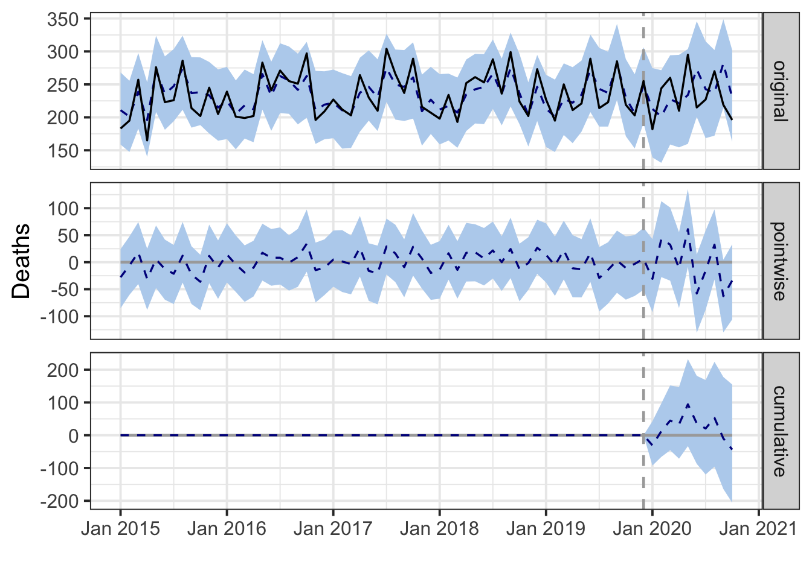
Queensland
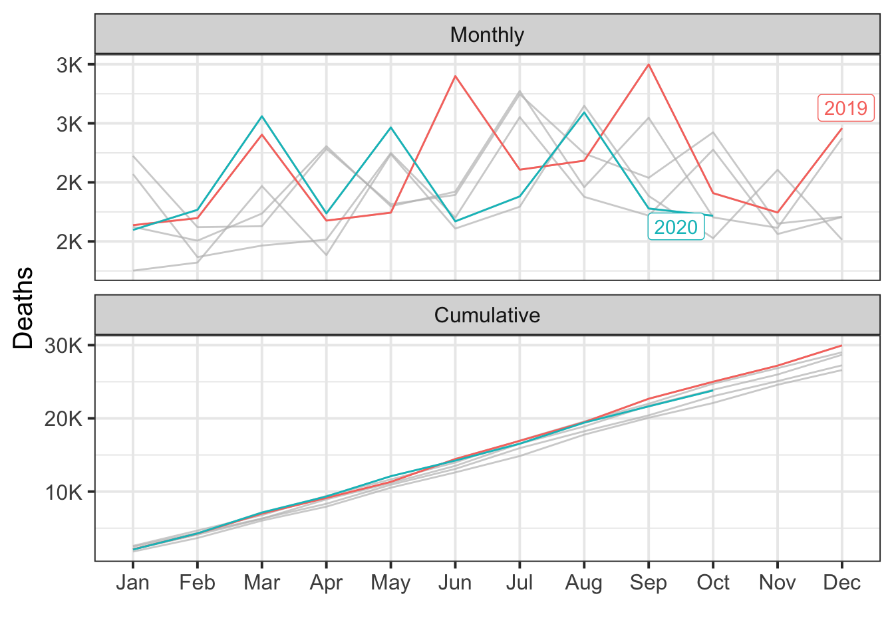
During the post-intervention period, the response variable had an average value of approx. 2.38K. In the absence of an intervention, we would have expected an average response of 2.37K. The 95% interval of this counterfactual prediction is [2.20K, 2.53K]. Subtracting this prediction from the observed response yields an estimate of the causal effect the intervention had on the response variable. This effect is 0.01K with a 95% interval of [-0.15K, 0.18K]. For a discussion of the significance of this effect, see below.
Summing up the individual data points during the post-intervention period (which can only sometimes be meaningfully interpreted), the response variable had an overall value of 23.81K. Had the intervention not taken place, we would have expected a sum of 23.67K. The 95% interval of this prediction is [22.01K, 25.30K].
The above results are given in terms of absolute numbers. In relative terms, the response variable showed an increase of +1%. The 95% interval of this percentage is [-6%, +8%].
This means that, although the intervention appears to have caused a positive effect, this effect is not statistically significant when considering the entire post-intervention period as a whole. Individual days or shorter stretches within the intervention period may of course still have had a significant effect, as indicated whenever the lower limit of the impact time series (lower plot) was above zero. The apparent effect could be the result of random fluctuations that are unrelated to the intervention. This is often the case when the intervention period is very long and includes much of the time when the effect has already worn off. It can also be the case when the intervention period is too short to distinguish the signal from the noise. Finally, failing to find a significant effect can happen when there are not enough control variables or when these variables do not correlate well with the response variable during the learning period.
The probability of obtaining this effect by chance is p = 0.452. This means the effect may be spurious and would generally not be considered statistically significant.

South Australia
During the post-intervention period, the response variable had an average value of approx. 916.10. In the absence of an intervention, we would have expected an average response of 927.04. The 95% interval of this counterfactual prediction is [869.43, 991.96]. Subtracting this prediction from the observed response yields an estimate of the causal effect the intervention had on the response variable. This effect is -10.94 with a 95% interval of [-75.86, 46.67]. For a discussion of the significance of this effect, see below.
Summing up the individual data points during the post-intervention period (which can only sometimes be meaningfully interpreted), the response variable had an overall value of 9.16K. Had the intervention not taken place, we would have expected a sum of 9.27K. The 95% interval of this prediction is [8.69K, 9.92K].
The above results are given in terms of absolute numbers. In relative terms, the response variable showed a decrease of -1%. The 95% interval of this percentage is [-8%, +5%].
This means that, although it may look as though the intervention has exerted a negative effect on the response variable when considering the intervention period as a whole, this effect is not statistically significant, and so cannot be meaningfully interpreted. The apparent effect could be the result of random fluctuations that are unrelated to the intervention. This is often the case when the intervention period is very long and includes much of the time when the effect has already worn off. It can also be the case when the intervention period is too short to distinguish the signal from the noise. Finally, failing to find a significant effect can happen when there are not enough control variables or when these variables do not correlate well with the response variable during the learning period.
The probability of obtaining this effect by chance is p = 0.346. This means the effect may be spurious and would generally not be considered statistically significant.
Tasmania

During the post-intervention period, the response variable had an average value of approx. 301.00. By contrast, in the absence of an intervention, we would have expected an average response of 337.72. The 95% interval of this counterfactual prediction is [302.13, 366.78]. Subtracting this prediction from the observed response yields an estimate of the causal effect the intervention had on the response variable. This effect is -36.72 with a 95% interval of [-65.78, -1.13]. For a discussion of the significance of this effect, see below.
Summing up the individual data points during the post-intervention period (which can only sometimes be meaningfully interpreted), the response variable had an overall value of 3.01K. By contrast, had the intervention not taken place, we would have expected a sum of 3.38K. The 95% interval of this prediction is [3.02K, 3.67K].
The above results are given in terms of absolute numbers. In relative terms, the response variable showed a decrease of -11%. The 95% interval of this percentage is [-19%, -0%].
This means that the negative effect observed during the intervention period is statistically significant. If the experimenter had expected a positive effect, it is recommended to double-check whether anomalies in the control variables may have caused an overly optimistic expectation of what should have happened in the response variable in the absence of the intervention.
The probability of obtaining this effect by chance is very small (Bayesian one-sided tail-area probability p = 0.022). This means the causal effect can be considered statistically significant.
Victoria

During the post-intervention period, the response variable had an average value of approx. 2.83K. In the absence of an intervention, we would have expected an average response of 2.82K. The 95% interval of this counterfactual prediction is [2.67K, 2.98K]. Subtracting this prediction from the observed response yields an estimate of the causal effect the intervention had on the response variable. This effect is 0.01K with a 95% interval of [-0.15K, 0.16K]. For a discussion of the significance of this effect, see below.
Summing up the individual data points during the post-intervention period (which can only sometimes be meaningfully interpreted), the response variable had an overall value of 28.30K. Had the intervention not taken place, we would have expected a sum of 28.22K. The 95% interval of this prediction is [26.72K, 29.78K].
The above results are given in terms of absolute numbers. In relative terms, the response variable showed an increase of +0%. The 95% interval of this percentage is [-5%, +6%].
This means that, although the intervention appears to have caused a positive effect, this effect is not statistically significant when considering the entire post-intervention period as a whole. Individual days or shorter stretches within the intervention period may of course still have had a significant effect, as indicated whenever the lower limit of the impact time series (lower plot) was above zero. The apparent effect could be the result of random fluctuations that are unrelated to the intervention. This is often the case when the intervention period is very long and includes much of the time when the effect has already worn off. It can also be the case when the intervention period is too short to distinguish the signal from the noise. Finally, failing to find a significant effect can happen when there are not enough control variables or when these variables do not correlate well with the response variable during the learning period.
The probability of obtaining this effect by chance is p = 0.451. This means the effect may be spurious and would generally not be considered statistically significant.
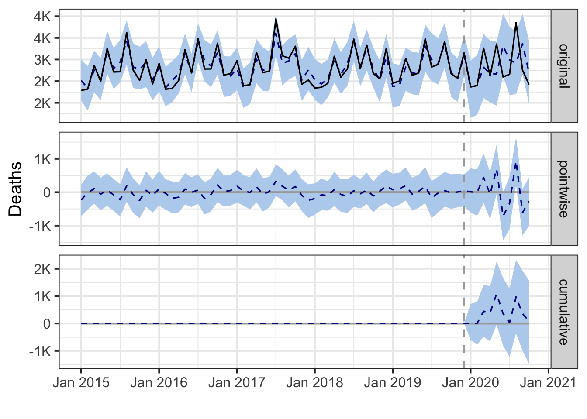
Western Australia

During the post-intervention period, the response variable had an average value of approx. 1.01K. In the absence of an intervention, we would have expected an average response of 1.04K. The 95% interval of this counterfactual prediction is [0.98K, 1.10K]. Subtracting this prediction from the observed response yields an estimate of the causal effect the intervention had on the response variable. This effect is -0.03K with a 95% interval of [-0.09K, 0.03K]. For a discussion of the significance of this effect, see below.
Summing up the individual data points during the post-intervention period (which can only sometimes be meaningfully interpreted), the response variable had an overall value of 10.11K. Had the intervention not taken place, we would have expected a sum of 10.39K. The 95% interval of this prediction is [9.81K, 11.00K].
The above results are given in terms of absolute numbers. In relative terms, the response variable showed a decrease of -3%. The 95% interval of this percentage is [-9%, +3%].
This means that, although it may look as though the intervention has exerted a negative effect on the response variable when considering the intervention period as a whole, this effect is not statistically significant, and so cannot be meaningfully interpreted. The apparent effect could be the result of random fluctuations that are unrelated to the intervention. This is often the case when the intervention period is very long and includes much of the time when the effect has already worn off. It can also be the case when the intervention period is too short to distinguish the signal from the noise. Finally, failing to find a significant effect can happen when there are not enough control variables or when these variables do not correlate well with the response variable during the learning period.
The probability of obtaining this effect by chance is p = 0.175. This means the effect may be spurious and would generally not be considered statistically significant.
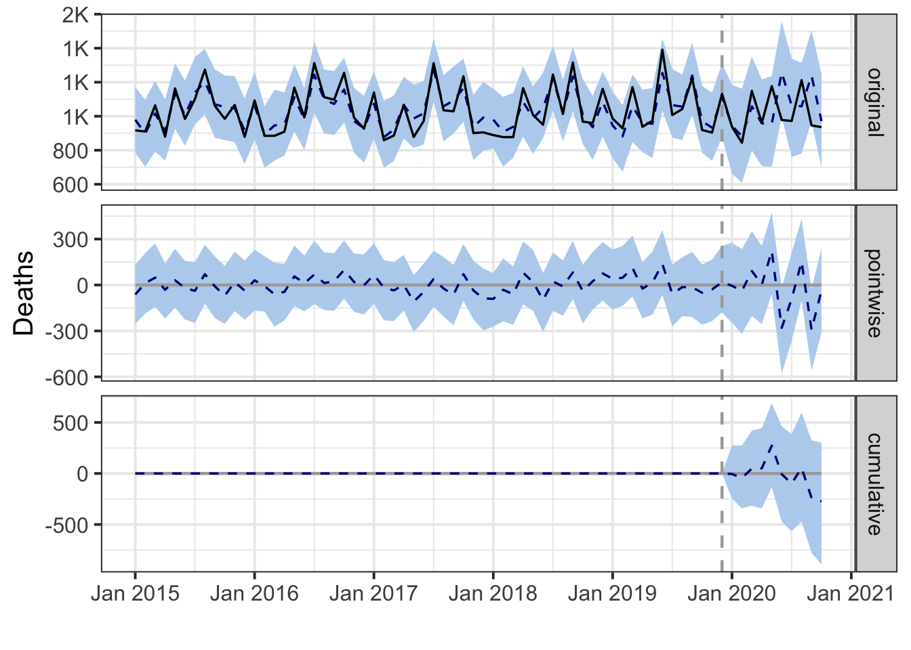
Excess deaths
plot.excess(au.region)Relative
Absolute
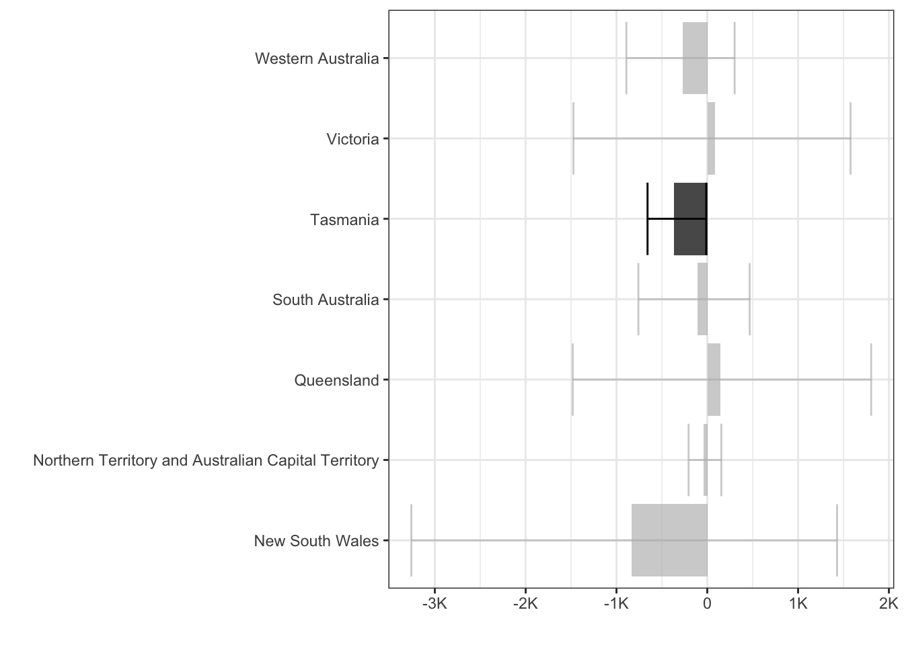
New Zealand
Source
National
countries <- rbind(countries, `New Zealand`=total(nz.deaths))
During the post-intervention period, the response variable had an average value of approx. 2.70K. In the absence of an intervention, we would have expected an average response of 2.67K. The 95% interval of this counterfactual prediction is [2.46K, 2.88K]. Subtracting this prediction from the observed response yields an estimate of the causal effect the intervention had on the response variable. This effect is 0.03K with a 95% interval of [-0.18K, 0.24K]. For a discussion of the significance of this effect, see below.
Summing up the individual data points during the post-intervention period (which can only sometimes be meaningfully interpreted), the response variable had an overall value of 32.41K. Had the intervention not taken place, we would have expected a sum of 32.00K. The 95% interval of this prediction is [29.50K, 34.52K].
The above results are given in terms of absolute numbers. In relative terms, the response variable showed an increase of +1%. The 95% interval of this percentage is [-7%, +9%].
This means that, although the intervention appears to have caused a positive effect, this effect is not statistically significant when considering the entire post-intervention period as a whole. Individual days or shorter stretches within the intervention period may of course still have had a significant effect, as indicated whenever the lower limit of the impact time series (lower plot) was above zero. The apparent effect could be the result of random fluctuations that are unrelated to the intervention. This is often the case when the intervention period is very long and includes much of the time when the effect has already worn off. It can also be the case when the intervention period is too short to distinguish the signal from the noise. Finally, failing to find a significant effect can happen when there are not enough control variables or when these variables do not correlate well with the response variable during the learning period.
The probability of obtaining this effect by chance is p = 0.372. This means the effect may be spurious and would generally not be considered statistically significant.

Regional
nz.region <- by.region(nz.deaths)Auckland
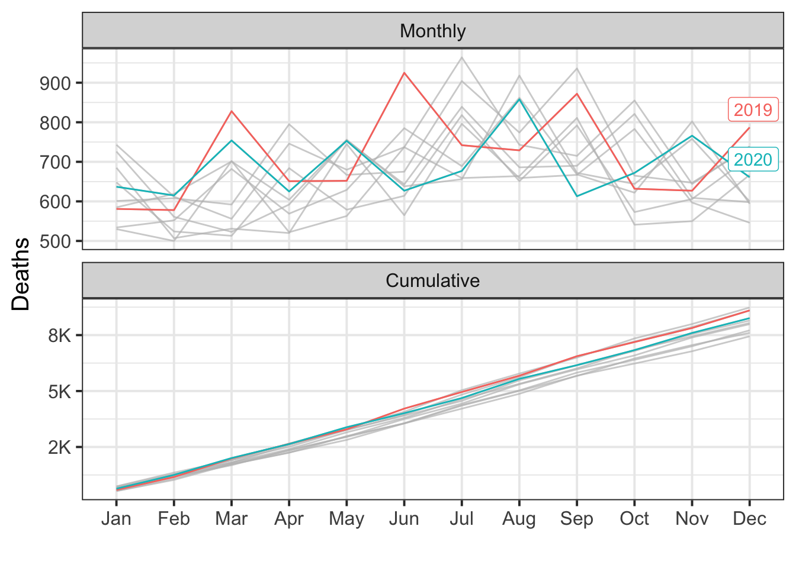
During the post-intervention period, the response variable had an average value of approx. 688.17. In the absence of an intervention, we would have expected an average response of 681.94. The 95% interval of this counterfactual prediction is [625.46, 732.10]. Subtracting this prediction from the observed response yields an estimate of the causal effect the intervention had on the response variable. This effect is 6.23 with a 95% interval of [-43.93, 62.70]. For a discussion of the significance of this effect, see below.
Summing up the individual data points during the post-intervention period (which can only sometimes be meaningfully interpreted), the response variable had an overall value of 8.26K. Had the intervention not taken place, we would have expected a sum of 8.18K. The 95% interval of this prediction is [7.51K, 8.79K].
The above results are given in terms of absolute numbers. In relative terms, the response variable showed an increase of +1%. The 95% interval of this percentage is [-6%, +9%].
This means that, although the intervention appears to have caused a positive effect, this effect is not statistically significant when considering the entire post-intervention period as a whole. Individual days or shorter stretches within the intervention period may of course still have had a significant effect, as indicated whenever the lower limit of the impact time series (lower plot) was above zero. The apparent effect could be the result of random fluctuations that are unrelated to the intervention. This is often the case when the intervention period is very long and includes much of the time when the effect has already worn off. It can also be the case when the intervention period is too short to distinguish the signal from the noise. Finally, failing to find a significant effect can happen when there are not enough control variables or when these variables do not correlate well with the response variable during the learning period.
The probability of obtaining this effect by chance is p = 0.427. This means the effect may be spurious and would generally not be considered statistically significant.
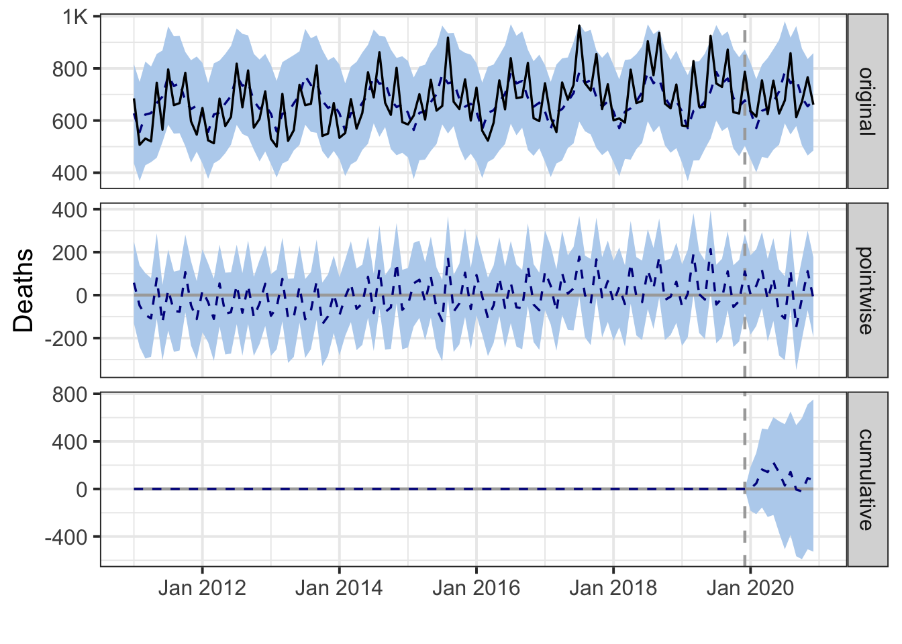
Canterbury

During the post-intervention period, the response variable had an average value of approx. 377.42. In the absence of an intervention, we would have expected an average response of 373.45. The 95% interval of this counterfactual prediction is [346.22, 403.54]. Subtracting this prediction from the observed response yields an estimate of the causal effect the intervention had on the response variable. This effect is 3.97 with a 95% interval of [-26.12, 31.20]. For a discussion of the significance of this effect, see below.
Summing up the individual data points during the post-intervention period (which can only sometimes be meaningfully interpreted), the response variable had an overall value of 4.53K. Had the intervention not taken place, we would have expected a sum of 4.48K. The 95% interval of this prediction is [4.15K, 4.84K].
The above results are given in terms of absolute numbers. In relative terms, the response variable showed an increase of +1%. The 95% interval of this percentage is [-7%, +8%].
This means that, although the intervention appears to have caused a positive effect, this effect is not statistically significant when considering the entire post-intervention period as a whole. Individual days or shorter stretches within the intervention period may of course still have had a significant effect, as indicated whenever the lower limit of the impact time series (lower plot) was above zero. The apparent effect could be the result of random fluctuations that are unrelated to the intervention. This is often the case when the intervention period is very long and includes much of the time when the effect has already worn off. It can also be the case when the intervention period is too short to distinguish the signal from the noise. Finally, failing to find a significant effect can happen when there are not enough control variables or when these variables do not correlate well with the response variable during the learning period.
The probability of obtaining this effect by chance is p = 0.397. This means the effect may be spurious and would generally not be considered statistically significant.

Other North Island regions
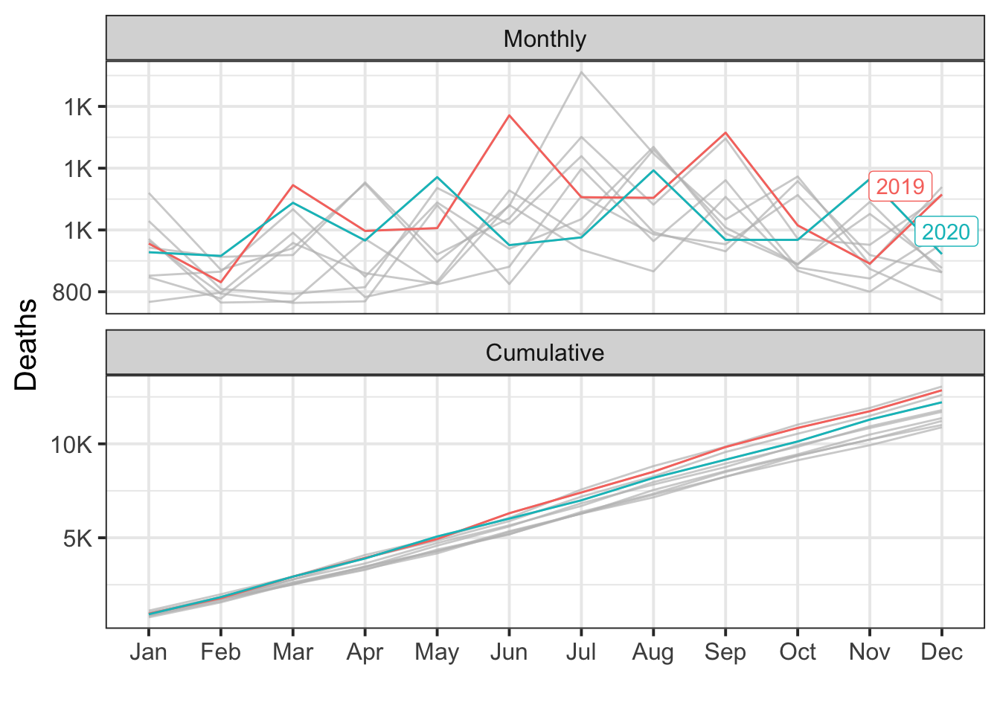
During the post-intervention period, the response variable had an average value of approx. 1.02K. In the absence of an intervention, we would have expected an average response of 1.00K. The 95% interval of this counterfactual prediction is [0.92K, 1.08K]. Subtracting this prediction from the observed response yields an estimate of the causal effect the intervention had on the response variable. This effect is 0.02K with a 95% interval of [-0.06K, 0.10K]. For a discussion of the significance of this effect, see below.
Summing up the individual data points during the post-intervention period (which can only sometimes be meaningfully interpreted), the response variable had an overall value of 12.21K. Had the intervention not taken place, we would have expected a sum of 11.99K. The 95% interval of this prediction is [10.99K, 12.91K].
The above results are given in terms of absolute numbers. In relative terms, the response variable showed an increase of +2%. The 95% interval of this percentage is [-6%, +10%].
This means that, although the intervention appears to have caused a positive effect, this effect is not statistically significant when considering the entire post-intervention period as a whole. Individual days or shorter stretches within the intervention period may of course still have had a significant effect, as indicated whenever the lower limit of the impact time series (lower plot) was above zero. The apparent effect could be the result of random fluctuations that are unrelated to the intervention. This is often the case when the intervention period is very long and includes much of the time when the effect has already worn off. It can also be the case when the intervention period is too short to distinguish the signal from the noise. Finally, failing to find a significant effect can happen when there are not enough control variables or when these variables do not correlate well with the response variable during the learning period.
The probability of obtaining this effect by chance is p = 0.322. This means the effect may be spurious and would generally not be considered statistically significant.

Other South Island regions

During the post-intervention period, the response variable had an average value of approx. 336.50. In the absence of an intervention, we would have expected an average response of 330.92. The 95% interval of this counterfactual prediction is [308.20, 354.88]. Subtracting this prediction from the observed response yields an estimate of the causal effect the intervention had on the response variable. This effect is 5.58 with a 95% interval of [-18.38, 28.30]. For a discussion of the significance of this effect, see below.
Summing up the individual data points during the post-intervention period (which can only sometimes be meaningfully interpreted), the response variable had an overall value of 4.04K. Had the intervention not taken place, we would have expected a sum of 3.97K. The 95% interval of this prediction is [3.70K, 4.26K].
The above results are given in terms of absolute numbers. In relative terms, the response variable showed an increase of +2%. The 95% interval of this percentage is [-6%, +9%].
This means that, although the intervention appears to have caused a positive effect, this effect is not statistically significant when considering the entire post-intervention period as a whole. Individual days or shorter stretches within the intervention period may of course still have had a significant effect, as indicated whenever the lower limit of the impact time series (lower plot) was above zero. The apparent effect could be the result of random fluctuations that are unrelated to the intervention. This is often the case when the intervention period is very long and includes much of the time when the effect has already worn off. It can also be the case when the intervention period is too short to distinguish the signal from the noise. Finally, failing to find a significant effect can happen when there are not enough control variables or when these variables do not correlate well with the response variable during the learning period.
The probability of obtaining this effect by chance is p = 0.354. This means the effect may be spurious and would generally not be considered statistically significant.
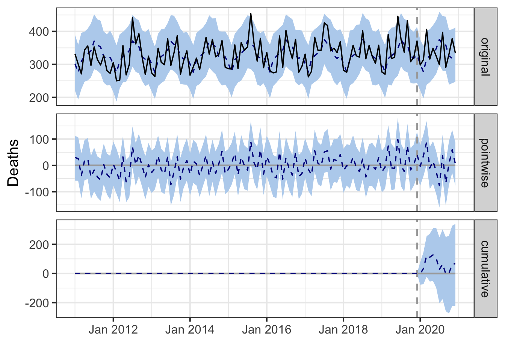
Wellington

During the post-intervention period, the response variable had an average value of approx. 281.25. In the absence of an intervention, we would have expected an average response of 280.37. The 95% interval of this counterfactual prediction is [257.49, 302.75]. Subtracting this prediction from the observed response yields an estimate of the causal effect the intervention had on the response variable. This effect is 0.88 with a 95% interval of [-21.50, 23.76]. For a discussion of the significance of this effect, see below.
Summing up the individual data points during the post-intervention period (which can only sometimes be meaningfully interpreted), the response variable had an overall value of 3.38K. Had the intervention not taken place, we would have expected a sum of 3.36K. The 95% interval of this prediction is [3.09K, 3.63K].
The above results are given in terms of absolute numbers. In relative terms, the response variable showed an increase of +0%. The 95% interval of this percentage is [-8%, +8%].
This means that, although the intervention appears to have caused a positive effect, this effect is not statistically significant when considering the entire post-intervention period as a whole. Individual days or shorter stretches within the intervention period may of course still have had a significant effect, as indicated whenever the lower limit of the impact time series (lower plot) was above zero. The apparent effect could be the result of random fluctuations that are unrelated to the intervention. This is often the case when the intervention period is very long and includes much of the time when the effect has already worn off. It can also be the case when the intervention period is too short to distinguish the signal from the noise. Finally, failing to find a significant effect can happen when there are not enough control variables or when these variables do not correlate well with the response variable during the learning period.
The probability of obtaining this effect by chance is p = 0.461. This means the effect may be spurious and would generally not be considered statistically significant.

Excess deaths
plot.excess(nz.region)Relative

Absolute
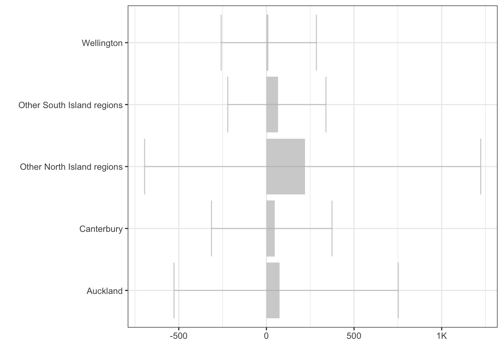
UK
Source
National
countries <- rbind(countries, `United Kingdom`=total(uk.deaths))
During the post-intervention period, the response variable had an average value of approx. 50.05K. By contrast, in the absence of an intervention, we would have expected an average response of 43.22K. The 95% interval of this counterfactual prediction is [41.50K, 45.04K]. Subtracting this prediction from the observed response yields an estimate of the causal effect the intervention had on the response variable. This effect is 6.83K with a 95% interval of [5.01K, 8.55K]. For a discussion of the significance of this effect, see below.
Summing up the individual data points during the post-intervention period (which can only sometimes be meaningfully interpreted), the response variable had an overall value of 550.55K. By contrast, had the intervention not taken place, we would have expected a sum of 475.42K. The 95% interval of this prediction is [456.53K, 495.45K].
The above results are given in terms of absolute numbers. In relative terms, the response variable showed an increase of +16%. The 95% interval of this percentage is [+12%, +20%].
This means that the positive effect observed during the intervention period is statistically significant and unlikely to be due to random fluctuations. It should be noted, however, that the question of whether this increase also bears substantive significance can only be answered by comparing the absolute effect (6.83K) to the original goal of the underlying intervention.
The probability of obtaining this effect by chance is very small (Bayesian one-sided tail-area probability p = 0.001). This means the causal effect can be considered statistically significant.
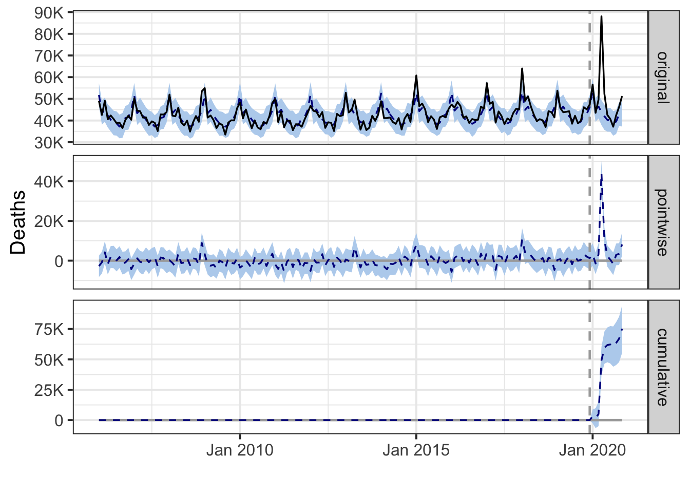
Regional
uk.region <- by.region(uk.deaths)EAST
During the post-intervention period, the response variable had an average value of approx. 5.30K. By contrast, in the absence of an intervention, we would have expected an average response of 4.66K. The 95% interval of this counterfactual prediction is [4.44K, 4.88K]. Subtracting this prediction from the observed response yields an estimate of the causal effect the intervention had on the response variable. This effect is 0.63K with a 95% interval of [0.42K, 0.86K]. For a discussion of the significance of this effect, see below.
Summing up the individual data points during the post-intervention period (which can only sometimes be meaningfully interpreted), the response variable had an overall value of 58.28K. By contrast, had the intervention not taken place, we would have expected a sum of 51.30K. The 95% interval of this prediction is [48.87K, 53.72K].
The above results are given in terms of absolute numbers. In relative terms, the response variable showed an increase of +14%. The 95% interval of this percentage is [+9%, +18%].
This means that the positive effect observed during the intervention period is statistically significant and unlikely to be due to random fluctuations. It should be noted, however, that the question of whether this increase also bears substantive significance can only be answered by comparing the absolute effect (0.63K) to the original goal of the underlying intervention.
The probability of obtaining this effect by chance is very small (Bayesian one-sided tail-area probability p = 0.001). This means the causal effect can be considered statistically significant.

LONDON
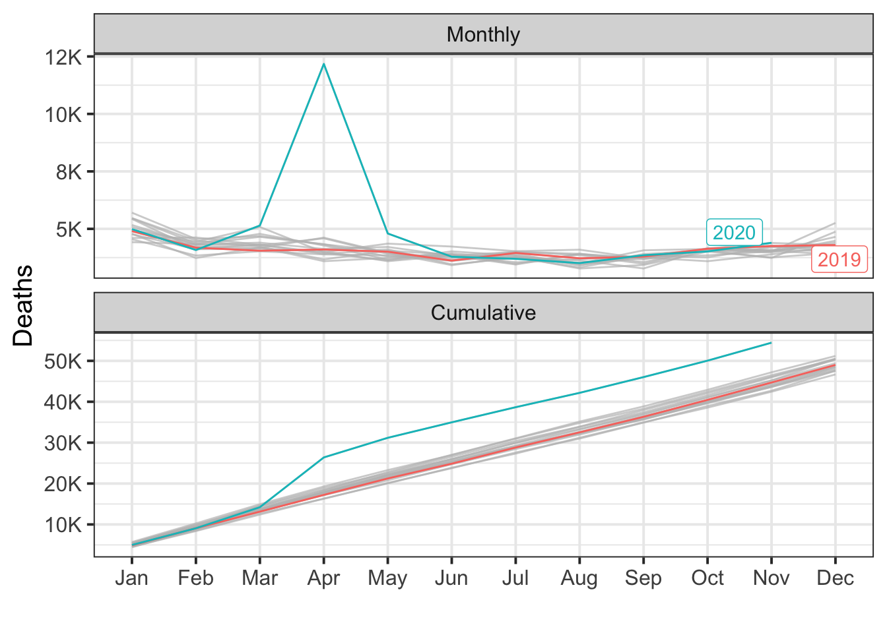
During the post-intervention period, the response variable had an average value of approx. 4.95K. By contrast, in the absence of an intervention, we would have expected an average response of 4.07K. The 95% interval of this counterfactual prediction is [3.89K, 4.25K]. Subtracting this prediction from the observed response yields an estimate of the causal effect the intervention had on the response variable. This effect is 0.88K with a 95% interval of [0.70K, 1.06K]. For a discussion of the significance of this effect, see below.
Summing up the individual data points during the post-intervention period (which can only sometimes be meaningfully interpreted), the response variable had an overall value of 54.45K. By contrast, had the intervention not taken place, we would have expected a sum of 44.77K. The 95% interval of this prediction is [42.83K, 46.71K].
The above results are given in terms of absolute numbers. In relative terms, the response variable showed an increase of +22%. The 95% interval of this percentage is [+17%, +26%].
This means that the positive effect observed during the intervention period is statistically significant and unlikely to be due to random fluctuations. It should be noted, however, that the question of whether this increase also bears substantive significance can only be answered by comparing the absolute effect (0.88K) to the original goal of the underlying intervention.
The probability of obtaining this effect by chance is very small (Bayesian one-sided tail-area probability p = 0.001). This means the causal effect can be considered statistically significant.

EAST MIDLANDS

During the post-intervention period, the response variable had an average value of approx. 4.26K. By contrast, in the absence of an intervention, we would have expected an average response of 3.67K. The 95% interval of this counterfactual prediction is [3.51K, 3.84K]. Subtracting this prediction from the observed response yields an estimate of the causal effect the intervention had on the response variable. This effect is 0.58K with a 95% interval of [0.42K, 0.75K]. For a discussion of the significance of this effect, see below.
Summing up the individual data points during the post-intervention period (which can only sometimes be meaningfully interpreted), the response variable had an overall value of 46.82K. By contrast, had the intervention not taken place, we would have expected a sum of 40.39K. The 95% interval of this prediction is [38.56K, 42.21K].
The above results are given in terms of absolute numbers. In relative terms, the response variable showed an increase of +16%. The 95% interval of this percentage is [+11%, +20%].
This means that the positive effect observed during the intervention period is statistically significant and unlikely to be due to random fluctuations. It should be noted, however, that the question of whether this increase also bears substantive significance can only be answered by comparing the absolute effect (0.58K) to the original goal of the underlying intervention.
The probability of obtaining this effect by chance is very small (Bayesian one-sided tail-area probability p = 0.001). This means the causal effect can be considered statistically significant.
WEST MIDLANDS

During the post-intervention period, the response variable had an average value of approx. 5.33K. By contrast, in the absence of an intervention, we would have expected an average response of 4.46K. The 95% interval of this counterfactual prediction is [4.25K, 4.66K]. Subtracting this prediction from the observed response yields an estimate of the causal effect the intervention had on the response variable. This effect is 0.87K with a 95% interval of [0.67K, 1.07K]. For a discussion of the significance of this effect, see below.
Summing up the individual data points during the post-intervention period (which can only sometimes be meaningfully interpreted), the response variable had an overall value of 58.61K. By contrast, had the intervention not taken place, we would have expected a sum of 49.08K. The 95% interval of this prediction is [46.80K, 51.26K].
The above results are given in terms of absolute numbers. In relative terms, the response variable showed an increase of +19%. The 95% interval of this percentage is [+15%, +24%].
This means that the positive effect observed during the intervention period is statistically significant and unlikely to be due to random fluctuations. It should be noted, however, that the question of whether this increase also bears substantive significance can only be answered by comparing the absolute effect (0.87K) to the original goal of the underlying intervention.
The probability of obtaining this effect by chance is very small (Bayesian one-sided tail-area probability p = 0.001). This means the causal effect can be considered statistically significant.

NORTH EAST
During the post-intervention period, the response variable had an average value of approx. 2.65K. By contrast, in the absence of an intervention, we would have expected an average response of 2.28K. The 95% interval of this counterfactual prediction is [2.18K, 2.37K]. Subtracting this prediction from the observed response yields an estimate of the causal effect the intervention had on the response variable. This effect is 0.37K with a 95% interval of [0.28K, 0.47K]. For a discussion of the significance of this effect, see below.
Summing up the individual data points during the post-intervention period (which can only sometimes be meaningfully interpreted), the response variable had an overall value of 29.14K. By contrast, had the intervention not taken place, we would have expected a sum of 25.08K. The 95% interval of this prediction is [23.94K, 26.11K].
The above results are given in terms of absolute numbers. In relative terms, the response variable showed an increase of +16%. The 95% interval of this percentage is [+12%, +21%].
This means that the positive effect observed during the intervention period is statistically significant and unlikely to be due to random fluctuations. It should be noted, however, that the question of whether this increase also bears substantive significance can only be answered by comparing the absolute effect (0.37K) to the original goal of the underlying intervention.
The probability of obtaining this effect by chance is very small (Bayesian one-sided tail-area probability p = 0.001). This means the causal effect can be considered statistically significant.

NORTH WEST

During the post-intervention period, the response variable had an average value of approx. 6.95K. By contrast, in the absence of an intervention, we would have expected an average response of 5.85K. The 95% interval of this counterfactual prediction is [5.59K, 6.09K]. Subtracting this prediction from the observed response yields an estimate of the causal effect the intervention had on the response variable. This effect is 1.10K with a 95% interval of [0.86K, 1.36K]. For a discussion of the significance of this effect, see below.
Summing up the individual data points during the post-intervention period (which can only sometimes be meaningfully interpreted), the response variable had an overall value of 76.45K. By contrast, had the intervention not taken place, we would have expected a sum of 64.32K. The 95% interval of this prediction is [61.53K, 67.00K].
The above results are given in terms of absolute numbers. In relative terms, the response variable showed an increase of +19%. The 95% interval of this percentage is [+15%, +23%].
This means that the positive effect observed during the intervention period is statistically significant and unlikely to be due to random fluctuations. It should be noted, however, that the question of whether this increase also bears substantive significance can only be answered by comparing the absolute effect (1.10K) to the original goal of the underlying intervention.
The probability of obtaining this effect by chance is very small (Bayesian one-sided tail-area probability p = 0.001). This means the causal effect can be considered statistically significant.

SOUTH EAST
During the post-intervention period, the response variable had an average value of approx. 7.55K. By contrast, in the absence of an intervention, we would have expected an average response of 6.64K. The 95% interval of this counterfactual prediction is [6.35K, 6.94K]. Subtracting this prediction from the observed response yields an estimate of the causal effect the intervention had on the response variable. This effect is 0.91K with a 95% interval of [0.62K, 1.21K]. For a discussion of the significance of this effect, see below.
Summing up the individual data points during the post-intervention period (which can only sometimes be meaningfully interpreted), the response variable had an overall value of 83.10K. By contrast, had the intervention not taken place, we would have expected a sum of 73.04K. The 95% interval of this prediction is [69.81K, 76.30K].
The above results are given in terms of absolute numbers. In relative terms, the response variable showed an increase of +14%. The 95% interval of this percentage is [+9%, +18%].
This means that the positive effect observed during the intervention period is statistically significant and unlikely to be due to random fluctuations. It should be noted, however, that the question of whether this increase also bears substantive significance can only be answered by comparing the absolute effect (0.91K) to the original goal of the underlying intervention.
The probability of obtaining this effect by chance is very small (Bayesian one-sided tail-area probability p = 0.001). This means the causal effect can be considered statistically significant.
SOUTH WEST
During the post-intervention period, the response variable had an average value of approx. 5.06K. By contrast, in the absence of an intervention, we would have expected an average response of 4.63K. The 95% interval of this counterfactual prediction is [4.42K, 4.83K]. Subtracting this prediction from the observed response yields an estimate of the causal effect the intervention had on the response variable. This effect is 0.43K with a 95% interval of [0.22K, 0.64K]. For a discussion of the significance of this effect, see below.
Summing up the individual data points during the post-intervention period (which can only sometimes be meaningfully interpreted), the response variable had an overall value of 55.62K. By contrast, had the intervention not taken place, we would have expected a sum of 50.91K. The 95% interval of this prediction is [48.64K, 53.16K].
The above results are given in terms of absolute numbers. In relative terms, the response variable showed an increase of +9%. The 95% interval of this percentage is [+5%, +14%].
This means that the positive effect observed during the intervention period is statistically significant and unlikely to be due to random fluctuations. It should be noted, however, that the question of whether this increase also bears substantive significance can only be answered by comparing the absolute effect (0.43K) to the original goal of the underlying intervention.
The probability of obtaining this effect by chance is very small (Bayesian one-sided tail-area probability p = 0.001). This means the causal effect can be considered statistically significant.
WALES
During the post-intervention period, the response variable had an average value of approx. 3.04K. By contrast, in the absence of an intervention, we would have expected an average response of 2.71K. The 95% interval of this counterfactual prediction is [2.57K, 2.84K]. Subtracting this prediction from the observed response yields an estimate of the causal effect the intervention had on the response variable. This effect is 0.33K with a 95% interval of [0.20K, 0.47K]. For a discussion of the significance of this effect, see below.
Summing up the individual data points during the post-intervention period (which can only sometimes be meaningfully interpreted), the response variable had an overall value of 33.46K. By contrast, had the intervention not taken place, we would have expected a sum of 29.86K. The 95% interval of this prediction is [28.32K, 31.23K].
The above results are given in terms of absolute numbers. In relative terms, the response variable showed an increase of +12%. The 95% interval of this percentage is [+7%, +17%].
This means that the positive effect observed during the intervention period is statistically significant and unlikely to be due to random fluctuations. It should be noted, however, that the question of whether this increase also bears substantive significance can only be answered by comparing the absolute effect (0.33K) to the original goal of the underlying intervention.
The probability of obtaining this effect by chance is very small (Bayesian one-sided tail-area probability p = 0.001). This means the causal effect can be considered statistically significant.

YORKSHIRE AND THE HUMBER

During the post-intervention period, the response variable had an average value of approx. 4.97K. By contrast, in the absence of an intervention, we would have expected an average response of 4.26K. The 95% interval of this counterfactual prediction is [4.08K, 4.44K]. Subtracting this prediction from the observed response yields an estimate of the causal effect the intervention had on the response variable. This effect is 0.71K with a 95% interval of [0.52K, 0.89K]. For a discussion of the significance of this effect, see below.
Summing up the individual data points during the post-intervention period (which can only sometimes be meaningfully interpreted), the response variable had an overall value of 54.63K. By contrast, had the intervention not taken place, we would have expected a sum of 46.85K. The 95% interval of this prediction is [44.84K, 48.85K].
The above results are given in terms of absolute numbers. In relative terms, the response variable showed an increase of +17%. The 95% interval of this percentage is [+12%, +21%].
This means that the positive effect observed during the intervention period is statistically significant and unlikely to be due to random fluctuations. It should be noted, however, that the question of whether this increase also bears substantive significance can only be answered by comparing the absolute effect (0.71K) to the original goal of the underlying intervention.
The probability of obtaining this effect by chance is very small (Bayesian one-sided tail-area probability p = 0.001). This means the causal effect can be considered statistically significant.

Excess deaths
plot.excess(uk.region)Relative

Absolute

US
Source
Underlying Cause of Death, 1999-2019 Request. Centers for Disease Control and Prevention, National Center for Health Statistics. Underlying Cause of Death 1999-2019 on CDC WONDER Online Database, released in 2020. Data are from the Multiple Cause of Death Files, 1999-2019, as compiled from data provided by the 57 vital statistics jurisdictions through the Vital Statistics Cooperative Program. Accessed at http://wonder.cdc.gov/ucd-icd10.html on Jan 3, 2021 6:49:16 AM
Weekly Counts of Deaths by State and Select Causes, 2020-2021
Note: I couldn’t find pre-2020 data for Puerto Rico, so it’s excluded from impact analysis.
National
countries <- rbind(countries,
`United States`=total(subset(us.deaths, select=-Puerto.Rico)))
During the post-intervention period, the response variable had an average value of approx. 270.89K. By contrast, in the absence of an intervention, we would have expected an average response of 236.47K. The 95% interval of this counterfactual prediction is [231.68K, 241.88K]. Subtracting this prediction from the observed response yields an estimate of the causal effect the intervention had on the response variable. This effect is 34.43K with a 95% interval of [29.01K, 39.22K]. For a discussion of the significance of this effect, see below.
Summing up the individual data points during the post-intervention period (which can only sometimes be meaningfully interpreted), the response variable had an overall value of 2.98M. By contrast, had the intervention not taken place, we would have expected a sum of 2.60M. The 95% interval of this prediction is [2.55M, 2.66M].
The above results are given in terms of absolute numbers. In relative terms, the response variable showed an increase of +15%. The 95% interval of this percentage is [+12%, +17%].
This means that the positive effect observed during the intervention period is statistically significant and unlikely to be due to random fluctuations. It should be noted, however, that the question of whether this increase also bears substantive significance can only be answered by comparing the absolute effect (34.43K) to the original goal of the underlying intervention.
The probability of obtaining this effect by chance is very small (Bayesian one-sided tail-area probability p = 0.001). This means the causal effect can be considered statistically significant.
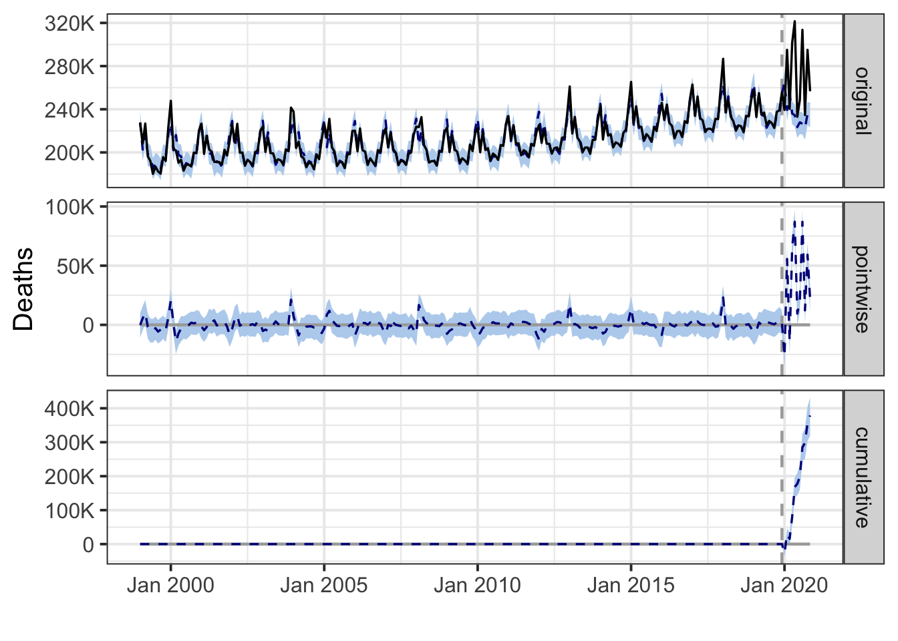
Regional
us.region <- by.region(us.deaths)Alabama
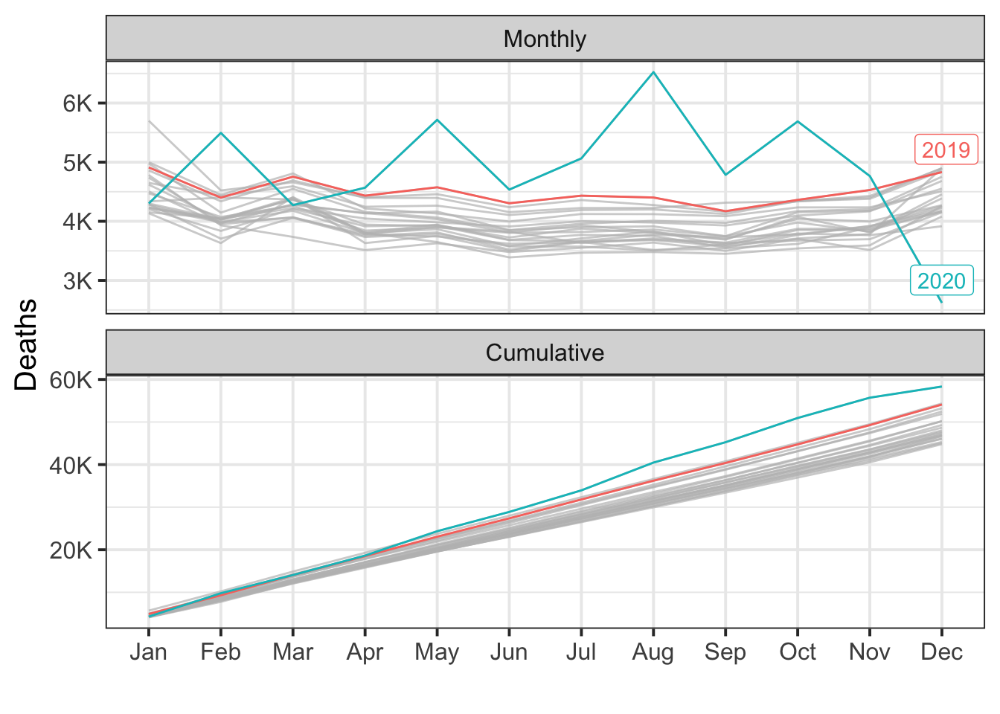
During the post-intervention period, the response variable had an average value of approx. 4.86K. By contrast, in the absence of an intervention, we would have expected an average response of 4.49K. The 95% interval of this counterfactual prediction is [4.38K, 4.61K]. Subtracting this prediction from the observed response yields an estimate of the causal effect the intervention had on the response variable. This effect is 0.37K with a 95% interval of [0.25K, 0.48K]. For a discussion of the significance of this effect, see below.
Summing up the individual data points during the post-intervention period (which can only sometimes be meaningfully interpreted), the response variable had an overall value of 58.34K. By contrast, had the intervention not taken place, we would have expected a sum of 53.92K. The 95% interval of this prediction is [52.61K, 55.38K].
The above results are given in terms of absolute numbers. In relative terms, the response variable showed an increase of +8%. The 95% interval of this percentage is [+5%, +11%].
This means that the positive effect observed during the intervention period is statistically significant and unlikely to be due to random fluctuations. It should be noted, however, that the question of whether this increase also bears substantive significance can only be answered by comparing the absolute effect (0.37K) to the original goal of the underlying intervention.
The probability of obtaining this effect by chance is very small (Bayesian one-sided tail-area probability p = 0.001). This means the causal effect can be considered statistically significant.
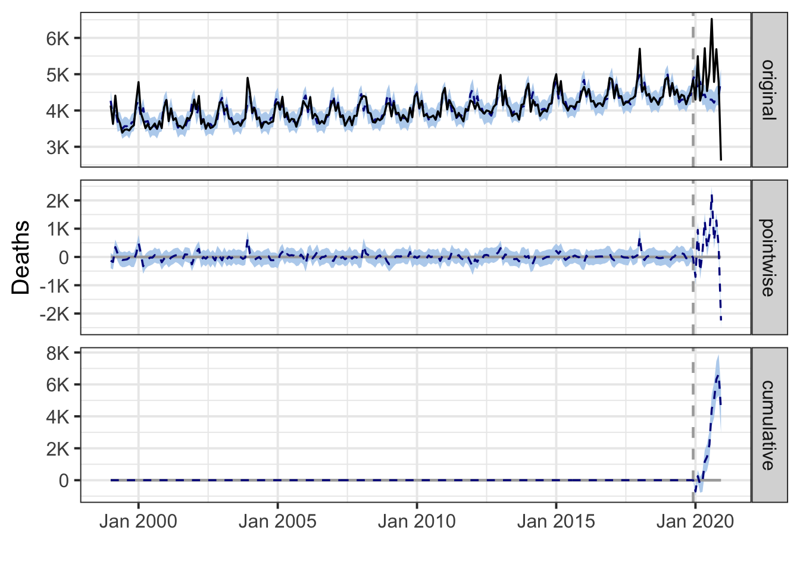
Alaska

During the post-intervention period, the response variable had an average value of approx. 370.00. In the absence of an intervention, we would have expected an average response of 379.15. The 95% interval of this counterfactual prediction is [362.32, 397.79]. Subtracting this prediction from the observed response yields an estimate of the causal effect the intervention had on the response variable. This effect is -9.15 with a 95% interval of [-27.79, 7.68]. For a discussion of the significance of this effect, see below.
Summing up the individual data points during the post-intervention period (which can only sometimes be meaningfully interpreted), the response variable had an overall value of 4.44K. Had the intervention not taken place, we would have expected a sum of 4.55K. The 95% interval of this prediction is [4.35K, 4.77K].
The above results are given in terms of absolute numbers. In relative terms, the response variable showed a decrease of -2%. The 95% interval of this percentage is [-7%, +2%].
This means that, although it may look as though the intervention has exerted a negative effect on the response variable when considering the intervention period as a whole, this effect is not statistically significant, and so cannot be meaningfully interpreted. The apparent effect could be the result of random fluctuations that are unrelated to the intervention. This is often the case when the intervention period is very long and includes much of the time when the effect has already worn off. It can also be the case when the intervention period is too short to distinguish the signal from the noise. Finally, failing to find a significant effect can happen when there are not enough control variables or when these variables do not correlate well with the response variable during the learning period.
The probability of obtaining this effect by chance is p = 0.171. This means the effect may be spurious and would generally not be considered statistically significant.

Arizona
During the post-intervention period, the response variable had an average value of approx. 5.94K. By contrast, in the absence of an intervention, we would have expected an average response of 5.01K. The 95% interval of this counterfactual prediction is [4.84K, 5.21K]. Subtracting this prediction from the observed response yields an estimate of the causal effect the intervention had on the response variable. This effect is 0.92K with a 95% interval of [0.73K, 1.09K]. For a discussion of the significance of this effect, see below.
Summing up the individual data points during the post-intervention period (which can only sometimes be meaningfully interpreted), the response variable had an overall value of 71.25K. By contrast, had the intervention not taken place, we would have expected a sum of 60.17K. The 95% interval of this prediction is [58.14K, 62.48K].
The above results are given in terms of absolute numbers. In relative terms, the response variable showed an increase of +18%. The 95% interval of this percentage is [+15%, +22%].
This means that the positive effect observed during the intervention period is statistically significant and unlikely to be due to random fluctuations. It should be noted, however, that the question of whether this increase also bears substantive significance can only be answered by comparing the absolute effect (0.92K) to the original goal of the underlying intervention.
The probability of obtaining this effect by chance is very small (Bayesian one-sided tail-area probability p = 0.001). This means the causal effect can be considered statistically significant.
Arkansas
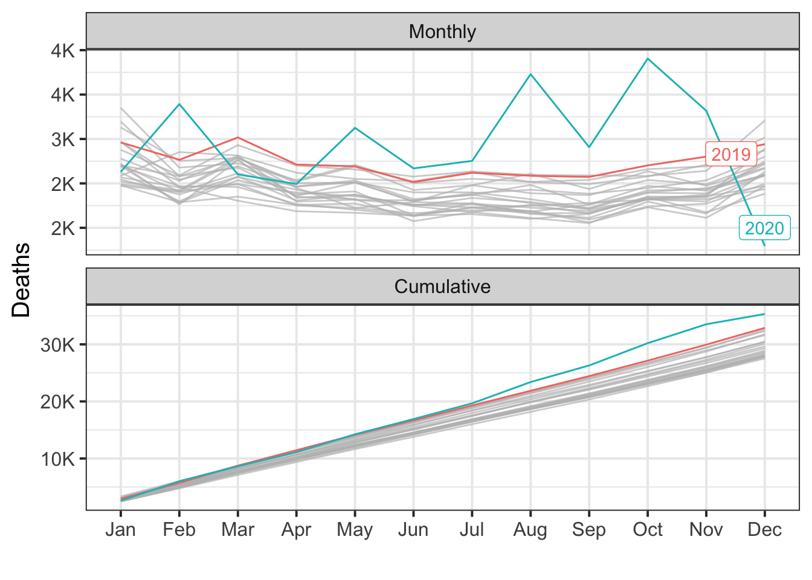
During the post-intervention period, the response variable had an average value of approx. 2.94K. By contrast, in the absence of an intervention, we would have expected an average response of 2.71K. The 95% interval of this counterfactual prediction is [2.63K, 2.79K]. Subtracting this prediction from the observed response yields an estimate of the causal effect the intervention had on the response variable. This effect is 0.23K with a 95% interval of [0.15K, 0.31K]. For a discussion of the significance of this effect, see below.
Summing up the individual data points during the post-intervention period (which can only sometimes be meaningfully interpreted), the response variable had an overall value of 35.32K. By contrast, had the intervention not taken place, we would have expected a sum of 32.52K. The 95% interval of this prediction is [31.61K, 33.47K].
The above results are given in terms of absolute numbers. In relative terms, the response variable showed an increase of +9%. The 95% interval of this percentage is [+6%, +11%].
This means that the positive effect observed during the intervention period is statistically significant and unlikely to be due to random fluctuations. It should be noted, however, that the question of whether this increase also bears substantive significance can only be answered by comparing the absolute effect (0.23K) to the original goal of the underlying intervention.
The probability of obtaining this effect by chance is very small (Bayesian one-sided tail-area probability p = 0.001). This means the causal effect can be considered statistically significant.

California

During the post-intervention period, the response variable had an average value of approx. 24.47K. By contrast, in the absence of an intervention, we would have expected an average response of 22.39K. The 95% interval of this counterfactual prediction is [21.81K, 22.95K]. Subtracting this prediction from the observed response yields an estimate of the causal effect the intervention had on the response variable. This effect is 2.08K with a 95% interval of [1.52K, 2.66K]. For a discussion of the significance of this effect, see below.
Summing up the individual data points during the post-intervention period (which can only sometimes be meaningfully interpreted), the response variable had an overall value of 293.65K. By contrast, had the intervention not taken place, we would have expected a sum of 268.68K. The 95% interval of this prediction is [261.74K, 275.42K].
The above results are given in terms of absolute numbers. In relative terms, the response variable showed an increase of +9%. The 95% interval of this percentage is [+7%, +12%].
This means that the positive effect observed during the intervention period is statistically significant and unlikely to be due to random fluctuations. It should be noted, however, that the question of whether this increase also bears substantive significance can only be answered by comparing the absolute effect (2.08K) to the original goal of the underlying intervention.
The probability of obtaining this effect by chance is very small (Bayesian one-sided tail-area probability p = 0.001). This means the causal effect can be considered statistically significant.

Colorado
During the post-intervention period, the response variable had an average value of approx. 3.73K. By contrast, in the absence of an intervention, we would have expected an average response of 3.28K. The 95% interval of this counterfactual prediction is [3.18K, 3.38K]. Subtracting this prediction from the observed response yields an estimate of the causal effect the intervention had on the response variable. This effect is 0.45K with a 95% interval of [0.35K, 0.55K]. For a discussion of the significance of this effect, see below.
Summing up the individual data points during the post-intervention period (which can only sometimes be meaningfully interpreted), the response variable had an overall value of 44.74K. By contrast, had the intervention not taken place, we would have expected a sum of 39.35K. The 95% interval of this prediction is [38.19K, 40.60K].
The above results are given in terms of absolute numbers. In relative terms, the response variable showed an increase of +14%. The 95% interval of this percentage is [+11%, +17%].
This means that the positive effect observed during the intervention period is statistically significant and unlikely to be due to random fluctuations. It should be noted, however, that the question of whether this increase also bears substantive significance can only be answered by comparing the absolute effect (0.45K) to the original goal of the underlying intervention.
The probability of obtaining this effect by chance is very small (Bayesian one-sided tail-area probability p = 0.001). This means the causal effect can be considered statistically significant.
Connecticut
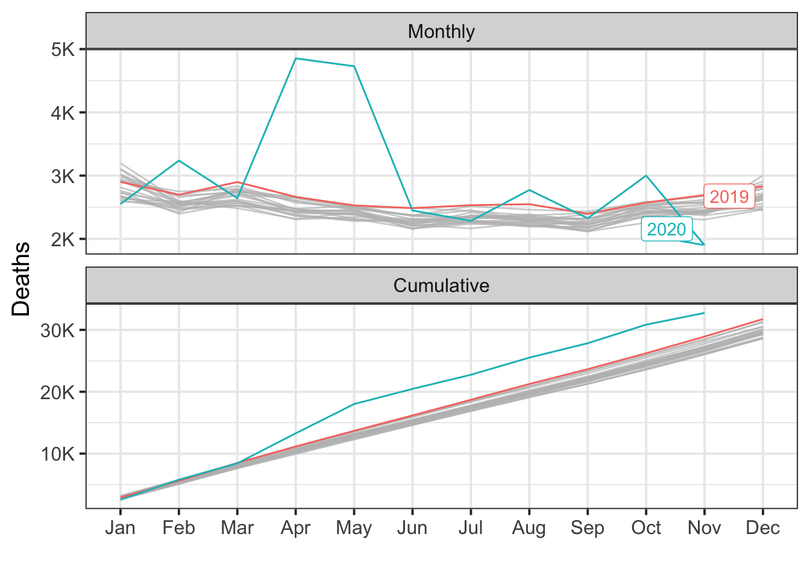
During the post-intervention period, the response variable had an average value of approx. 2.98K. By contrast, in the absence of an intervention, we would have expected an average response of 2.58K. The 95% interval of this counterfactual prediction is [2.52K, 2.65K]. Subtracting this prediction from the observed response yields an estimate of the causal effect the intervention had on the response variable. This effect is 0.39K with a 95% interval of [0.33K, 0.46K]. For a discussion of the significance of this effect, see below.
Summing up the individual data points during the post-intervention period (which can only sometimes be meaningfully interpreted), the response variable had an overall value of 32.74K. By contrast, had the intervention not taken place, we would have expected a sum of 28.43K. The 95% interval of this prediction is [27.72K, 29.13K].
The above results are given in terms of absolute numbers. In relative terms, the response variable showed an increase of +15%. The 95% interval of this percentage is [+13%, +18%].
This means that the positive effect observed during the intervention period is statistically significant and unlikely to be due to random fluctuations. It should be noted, however, that the question of whether this increase also bears substantive significance can only be answered by comparing the absolute effect (0.39K) to the original goal of the underlying intervention.
The probability of obtaining this effect by chance is very small (Bayesian one-sided tail-area probability p = 0.001). This means the causal effect can be considered statistically significant.

Delaware

During the post-intervention period, the response variable had an average value of approx. 815.33. By contrast, in the absence of an intervention, we would have expected an average response of 777.74. The 95% interval of this counterfactual prediction is [750.49, 807.30]. Subtracting this prediction from the observed response yields an estimate of the causal effect the intervention had on the response variable. This effect is 37.59 with a 95% interval of [8.04, 64.84]. For a discussion of the significance of this effect, see below.
Summing up the individual data points during the post-intervention period (which can only sometimes be meaningfully interpreted), the response variable had an overall value of 9.78K. By contrast, had the intervention not taken place, we would have expected a sum of 9.33K. The 95% interval of this prediction is [9.01K, 9.69K].
The above results are given in terms of absolute numbers. In relative terms, the response variable showed an increase of +5%. The 95% interval of this percentage is [+1%, +8%].
This means that the positive effect observed during the intervention period is statistically significant and unlikely to be due to random fluctuations. It should be noted, however, that the question of whether this increase also bears substantive significance can only be answered by comparing the absolute effect (37.59) to the original goal of the underlying intervention.
The probability of obtaining this effect by chance is very small (Bayesian one-sided tail-area probability p = 0.006). This means the causal effect can be considered statistically significant.

District of Columbia

During the post-intervention period, the response variable had an average value of approx. 577.08. By contrast, in the absence of an intervention, we would have expected an average response of 414.81. The 95% interval of this counterfactual prediction is [394.88, 435.20]. Subtracting this prediction from the observed response yields an estimate of the causal effect the intervention had on the response variable. This effect is 162.27 with a 95% interval of [141.88, 182.20]. For a discussion of the significance of this effect, see below.
Summing up the individual data points during the post-intervention period (which can only sometimes be meaningfully interpreted), the response variable had an overall value of 6.92K. By contrast, had the intervention not taken place, we would have expected a sum of 4.98K. The 95% interval of this prediction is [4.74K, 5.22K].
The above results are given in terms of absolute numbers. In relative terms, the response variable showed an increase of +39%. The 95% interval of this percentage is [+34%, +44%].
This means that the positive effect observed during the intervention period is statistically significant and unlikely to be due to random fluctuations. It should be noted, however, that the question of whether this increase also bears substantive significance can only be answered by comparing the absolute effect (162.27) to the original goal of the underlying intervention.
The probability of obtaining this effect by chance is very small (Bayesian one-sided tail-area probability p = 0.001). This means the causal effect can be considered statistically significant.

Florida
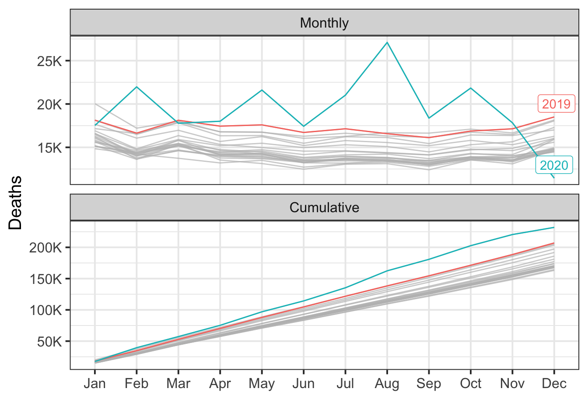
During the post-intervention period, the response variable had an average value of approx. 19.33K. By contrast, in the absence of an intervention, we would have expected an average response of 17.33K. The 95% interval of this counterfactual prediction is [16.94K, 17.73K]. Subtracting this prediction from the observed response yields an estimate of the causal effect the intervention had on the response variable. This effect is 2.00K with a 95% interval of [1.60K, 2.39K]. For a discussion of the significance of this effect, see below.
Summing up the individual data points during the post-intervention period (which can only sometimes be meaningfully interpreted), the response variable had an overall value of 231.93K. By contrast, had the intervention not taken place, we would have expected a sum of 207.94K. The 95% interval of this prediction is [203.24K, 212.74K].
The above results are given in terms of absolute numbers. In relative terms, the response variable showed an increase of +12%. The 95% interval of this percentage is [+9%, +14%].
This means that the positive effect observed during the intervention period is statistically significant and unlikely to be due to random fluctuations. It should be noted, however, that the question of whether this increase also bears substantive significance can only be answered by comparing the absolute effect (2.00K) to the original goal of the underlying intervention.
The probability of obtaining this effect by chance is very small (Bayesian one-sided tail-area probability p = 0.001). This means the causal effect can be considered statistically significant.
Georgia

During the post-intervention period, the response variable had an average value of approx. 7.88K. By contrast, in the absence of an intervention, we would have expected an average response of 7.16K. The 95% interval of this counterfactual prediction is [6.97K, 7.38K]. Subtracting this prediction from the observed response yields an estimate of the causal effect the intervention had on the response variable. This effect is 0.72K with a 95% interval of [0.49K, 0.91K]. For a discussion of the significance of this effect, see below.
Summing up the individual data points during the post-intervention period (which can only sometimes be meaningfully interpreted), the response variable had an overall value of 94.55K. By contrast, had the intervention not taken place, we would have expected a sum of 85.96K. The 95% interval of this prediction is [83.67K, 88.62K].
The above results are given in terms of absolute numbers. In relative terms, the response variable showed an increase of +10%. The 95% interval of this percentage is [+7%, +13%].
This means that the positive effect observed during the intervention period is statistically significant and unlikely to be due to random fluctuations. It should be noted, however, that the question of whether this increase also bears substantive significance can only be answered by comparing the absolute effect (0.72K) to the original goal of the underlying intervention.
The probability of obtaining this effect by chance is very small (Bayesian one-sided tail-area probability p = 0.001). This means the causal effect can be considered statistically significant.

Hawaii

During the post-intervention period, the response variable had an average value of approx. 967.58. In the absence of an intervention, we would have expected an average response of 956.04. The 95% interval of this counterfactual prediction is [925.19, 988.65]. Subtracting this prediction from the observed response yields an estimate of the causal effect the intervention had on the response variable. This effect is 11.54 with a 95% interval of [-21.07, 42.39]. For a discussion of the significance of this effect, see below.
Summing up the individual data points during the post-intervention period (which can only sometimes be meaningfully interpreted), the response variable had an overall value of 11.61K. Had the intervention not taken place, we would have expected a sum of 11.47K. The 95% interval of this prediction is [11.10K, 11.86K].
The above results are given in terms of absolute numbers. In relative terms, the response variable showed an increase of +1%. The 95% interval of this percentage is [-2%, +4%].
This means that, although the intervention appears to have caused a positive effect, this effect is not statistically significant when considering the entire post-intervention period as a whole. Individual days or shorter stretches within the intervention period may of course still have had a significant effect, as indicated whenever the lower limit of the impact time series (lower plot) was above zero. The apparent effect could be the result of random fluctuations that are unrelated to the intervention. This is often the case when the intervention period is very long and includes much of the time when the effect has already worn off. It can also be the case when the intervention period is too short to distinguish the signal from the noise. Finally, failing to find a significant effect can happen when there are not enough control variables or when these variables do not correlate well with the response variable during the learning period.
The probability of obtaining this effect by chance is p = 0.238. This means the effect may be spurious and would generally not be considered statistically significant.
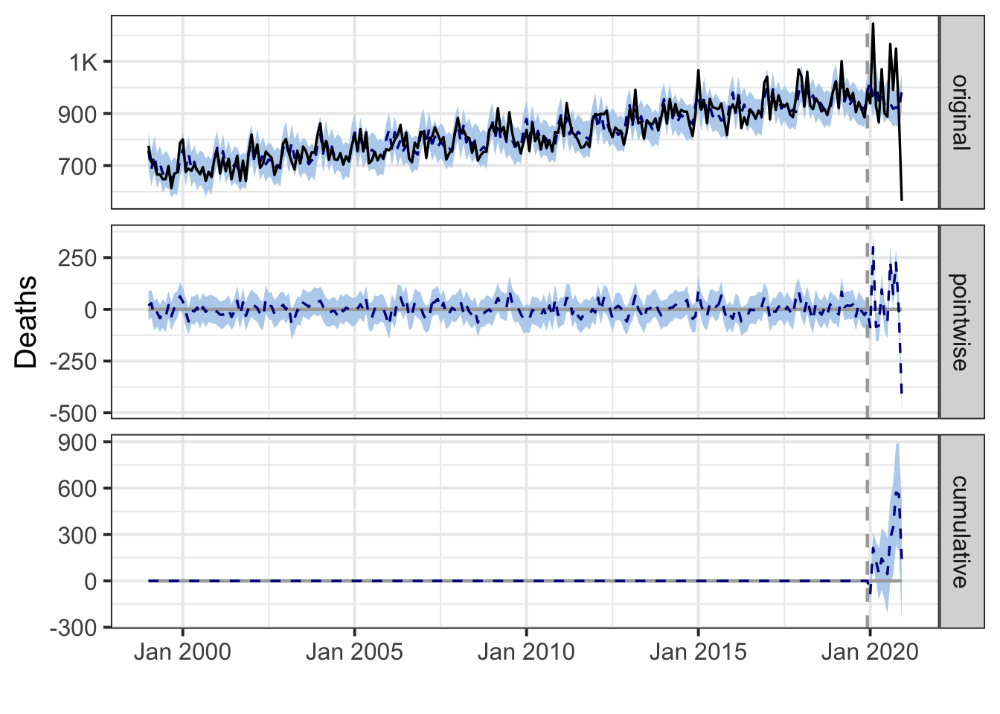
Idaho

During the post-intervention period, the response variable had an average value of approx. 1.29K. By contrast, in the absence of an intervention, we would have expected an average response of 1.20K. The 95% interval of this counterfactual prediction is [1.16K, 1.23K]. Subtracting this prediction from the observed response yields an estimate of the causal effect the intervention had on the response variable. This effect is 0.10K with a 95% interval of [0.06K, 0.13K]. For a discussion of the significance of this effect, see below.
Summing up the individual data points during the post-intervention period (which can only sometimes be meaningfully interpreted), the response variable had an overall value of 15.50K. By contrast, had the intervention not taken place, we would have expected a sum of 14.35K. The 95% interval of this prediction is [13.89K, 14.81K].
The above results are given in terms of absolute numbers. In relative terms, the response variable showed an increase of +8%. The 95% interval of this percentage is [+5%, +11%].
This means that the positive effect observed during the intervention period is statistically significant and unlikely to be due to random fluctuations. It should be noted, however, that the question of whether this increase also bears substantive significance can only be answered by comparing the absolute effect (0.10K) to the original goal of the underlying intervention.
The probability of obtaining this effect by chance is very small (Bayesian one-sided tail-area probability p = 0.001). This means the causal effect can be considered statistically significant.

Illinois

During the post-intervention period, the response variable had an average value of approx. 10.18K. By contrast, in the absence of an intervention, we would have expected an average response of 9.07K. The 95% interval of this counterfactual prediction is [8.85K, 9.30K]. Subtracting this prediction from the observed response yields an estimate of the causal effect the intervention had on the response variable. This effect is 1.11K with a 95% interval of [0.88K, 1.33K]. For a discussion of the significance of this effect, see below.
Summing up the individual data points during the post-intervention period (which can only sometimes be meaningfully interpreted), the response variable had an overall value of 122.17K. By contrast, had the intervention not taken place, we would have expected a sum of 108.84K. The 95% interval of this prediction is [106.25K, 111.59K].
The above results are given in terms of absolute numbers. In relative terms, the response variable showed an increase of +12%. The 95% interval of this percentage is [+10%, +15%].
This means that the positive effect observed during the intervention period is statistically significant and unlikely to be due to random fluctuations. It should be noted, however, that the question of whether this increase also bears substantive significance can only be answered by comparing the absolute effect (1.11K) to the original goal of the underlying intervention.
The probability of obtaining this effect by chance is very small (Bayesian one-sided tail-area probability p = 0.001). This means the causal effect can be considered statistically significant.
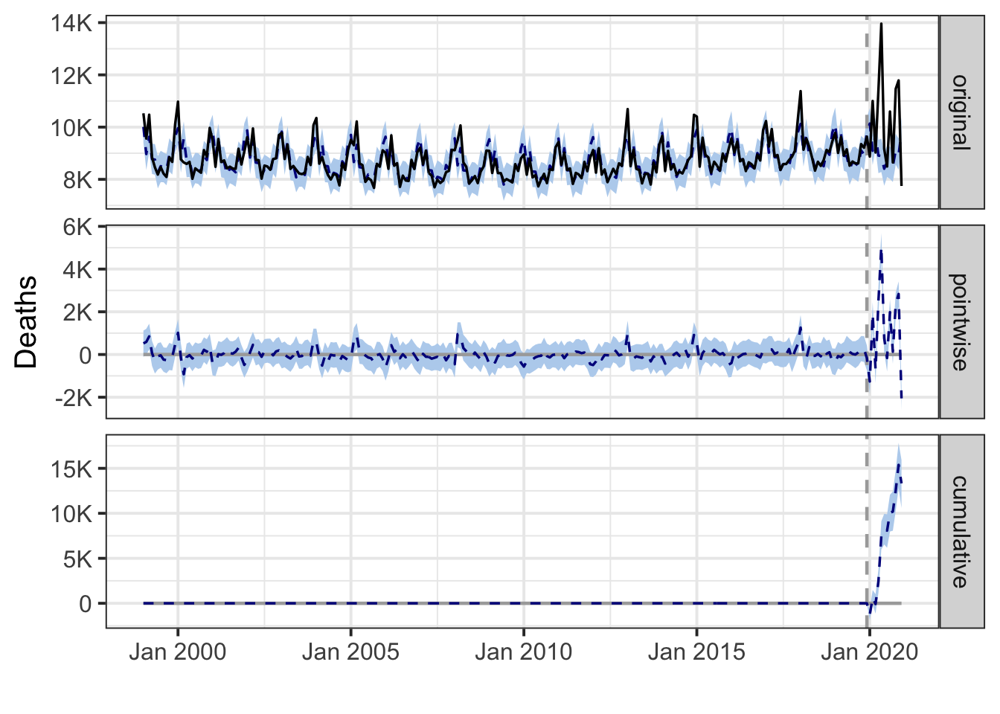
Indiana
During the post-intervention period, the response variable had an average value of approx. 6.10K. By contrast, in the absence of an intervention, we would have expected an average response of 5.48K. The 95% interval of this counterfactual prediction is [5.34K, 5.64K]. Subtracting this prediction from the observed response yields an estimate of the causal effect the intervention had on the response variable. This effect is 0.62K with a 95% interval of [0.46K, 0.75K]. For a discussion of the significance of this effect, see below.
Summing up the individual data points during the post-intervention period (which can only sometimes be meaningfully interpreted), the response variable had an overall value of 73.16K. By contrast, had the intervention not taken place, we would have expected a sum of 65.75K. The 95% interval of this prediction is [64.13K, 67.70K].
The above results are given in terms of absolute numbers. In relative terms, the response variable showed an increase of +11%. The 95% interval of this percentage is [+8%, +14%].
This means that the positive effect observed during the intervention period is statistically significant and unlikely to be due to random fluctuations. It should be noted, however, that the question of whether this increase also bears substantive significance can only be answered by comparing the absolute effect (0.62K) to the original goal of the underlying intervention.
The probability of obtaining this effect by chance is very small (Bayesian one-sided tail-area probability p = 0.001). This means the causal effect can be considered statistically significant.

Iowa
During the post-intervention period, the response variable had an average value of approx. 2.79K. By contrast, in the absence of an intervention, we would have expected an average response of 2.53K. The 95% interval of this counterfactual prediction is [2.47K, 2.60K]. Subtracting this prediction from the observed response yields an estimate of the causal effect the intervention had on the response variable. This effect is 0.26K with a 95% interval of [0.19K, 0.32K]. For a discussion of the significance of this effect, see below.
Summing up the individual data points during the post-intervention period (which can only sometimes be meaningfully interpreted), the response variable had an overall value of 33.47K. By contrast, had the intervention not taken place, we would have expected a sum of 30.35K. The 95% interval of this prediction is [29.58K, 31.21K].
The above results are given in terms of absolute numbers. In relative terms, the response variable showed an increase of +10%. The 95% interval of this percentage is [+7%, +13%].
This means that the positive effect observed during the intervention period is statistically significant and unlikely to be due to random fluctuations. It should be noted, however, that the question of whether this increase also bears substantive significance can only be answered by comparing the absolute effect (0.26K) to the original goal of the underlying intervention.
The probability of obtaining this effect by chance is very small (Bayesian one-sided tail-area probability p = 0.001). This means the causal effect can be considered statistically significant.
Kansas

During the post-intervention period, the response variable had an average value of approx. 2.42K. By contrast, in the absence of an intervention, we would have expected an average response of 2.27K. The 95% interval of this counterfactual prediction is [2.21K, 2.34K]. Subtracting this prediction from the observed response yields an estimate of the causal effect the intervention had on the response variable. This effect is 0.14K with a 95% interval of [0.07K, 0.21K]. For a discussion of the significance of this effect, see below.
Summing up the individual data points during the post-intervention period (which can only sometimes be meaningfully interpreted), the response variable had an overall value of 28.98K. By contrast, had the intervention not taken place, we would have expected a sum of 27.28K. The 95% interval of this prediction is [26.51K, 28.11K].
The above results are given in terms of absolute numbers. In relative terms, the response variable showed an increase of +6%. The 95% interval of this percentage is [+3%, +9%].
This means that the positive effect observed during the intervention period is statistically significant and unlikely to be due to random fluctuations. It should be noted, however, that the question of whether this increase also bears substantive significance can only be answered by comparing the absolute effect (0.14K) to the original goal of the underlying intervention.
The probability of obtaining this effect by chance is very small (Bayesian one-sided tail-area probability p = 0.001). This means the causal effect can be considered statistically significant.
Kentucky
During the post-intervention period, the response variable had an average value of approx. 4.21K. By contrast, in the absence of an intervention, we would have expected an average response of 4.07K. The 95% interval of this counterfactual prediction is [3.96K, 4.19K]. Subtracting this prediction from the observed response yields an estimate of the causal effect the intervention had on the response variable. This effect is 0.14K with a 95% interval of [0.02K, 0.25K]. For a discussion of the significance of this effect, see below.
Summing up the individual data points during the post-intervention period (which can only sometimes be meaningfully interpreted), the response variable had an overall value of 50.54K. By contrast, had the intervention not taken place, we would have expected a sum of 48.86K. The 95% interval of this prediction is [47.55K, 50.24K].
The above results are given in terms of absolute numbers. In relative terms, the response variable showed an increase of +3%. The 95% interval of this percentage is [+1%, +6%].
This means that the positive effect observed during the intervention period is statistically significant and unlikely to be due to random fluctuations. It should be noted, however, that the question of whether this increase also bears substantive significance can only be answered by comparing the absolute effect (0.14K) to the original goal of the underlying intervention.
The probability of obtaining this effect by chance is very small (Bayesian one-sided tail-area probability p = 0.008). This means the causal effect can be considered statistically significant.

Louisiana
During the post-intervention period, the response variable had an average value of approx. 4.32K. By contrast, in the absence of an intervention, we would have expected an average response of 3.82K. The 95% interval of this counterfactual prediction is [3.72K, 3.95K]. Subtracting this prediction from the observed response yields an estimate of the causal effect the intervention had on the response variable. This effect is 0.50K with a 95% interval of [0.37K, 0.60K]. For a discussion of the significance of this effect, see below.
Summing up the individual data points during the post-intervention period (which can only sometimes be meaningfully interpreted), the response variable had an overall value of 51.82K. By contrast, had the intervention not taken place, we would have expected a sum of 45.83K. The 95% interval of this prediction is [44.59K, 47.35K].
The above results are given in terms of absolute numbers. In relative terms, the response variable showed an increase of +13%. The 95% interval of this percentage is [+10%, +16%].
This means that the positive effect observed during the intervention period is statistically significant and unlikely to be due to random fluctuations. It should be noted, however, that the question of whether this increase also bears substantive significance can only be answered by comparing the absolute effect (0.50K) to the original goal of the underlying intervention.
The probability of obtaining this effect by chance is very small (Bayesian one-sided tail-area probability p = 0.001). This means the causal effect can be considered statistically significant.
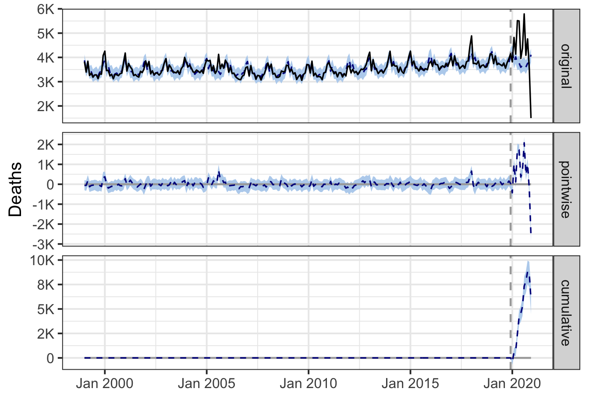
Maine
During the post-intervention period, the response variable had an average value of approx. 1.26K. In the absence of an intervention, we would have expected an average response of 1.24K. The 95% interval of this counterfactual prediction is [1.20K, 1.28K]. Subtracting this prediction from the observed response yields an estimate of the causal effect the intervention had on the response variable. This effect is 0.02K with a 95% interval of [-0.02K, 0.06K]. For a discussion of the significance of this effect, see below.
Summing up the individual data points during the post-intervention period (which can only sometimes be meaningfully interpreted), the response variable had an overall value of 15.07K. Had the intervention not taken place, we would have expected a sum of 14.85K. The 95% interval of this prediction is [14.39K, 15.35K].
The above results are given in terms of absolute numbers. In relative terms, the response variable showed an increase of +1%. The 95% interval of this percentage is [-2%, +5%].
This means that, although the intervention appears to have caused a positive effect, this effect is not statistically significant when considering the entire post-intervention period as a whole. Individual days or shorter stretches within the intervention period may of course still have had a significant effect, as indicated whenever the lower limit of the impact time series (lower plot) was above zero. The apparent effect could be the result of random fluctuations that are unrelated to the intervention. This is often the case when the intervention period is very long and includes much of the time when the effect has already worn off. It can also be the case when the intervention period is too short to distinguish the signal from the noise. Finally, failing to find a significant effect can happen when there are not enough control variables or when these variables do not correlate well with the response variable during the learning period.
The probability of obtaining this effect by chance is p = 0.194. This means the effect may be spurious and would generally not be considered statistically significant.

Maryland

During the post-intervention period, the response variable had an average value of approx. 4.71K. By contrast, in the absence of an intervention, we would have expected an average response of 4.22K. The 95% interval of this counterfactual prediction is [4.12K, 4.33K]. Subtracting this prediction from the observed response yields an estimate of the causal effect the intervention had on the response variable. This effect is 0.49K with a 95% interval of [0.39K, 0.60K]. For a discussion of the significance of this effect, see below.
Summing up the individual data points during the post-intervention period (which can only sometimes be meaningfully interpreted), the response variable had an overall value of 56.54K. By contrast, had the intervention not taken place, we would have expected a sum of 50.65K. The 95% interval of this prediction is [49.40K, 51.90K].
The above results are given in terms of absolute numbers. In relative terms, the response variable showed an increase of +12%. The 95% interval of this percentage is [+9%, +14%].
This means that the positive effect observed during the intervention period is statistically significant and unlikely to be due to random fluctuations. It should be noted, however, that the question of whether this increase also bears substantive significance can only be answered by comparing the absolute effect (0.49K) to the original goal of the underlying intervention.
The probability of obtaining this effect by chance is very small (Bayesian one-sided tail-area probability p = 0.001). This means the causal effect can be considered statistically significant.
Massachusetts
During the post-intervention period, the response variable had an average value of approx. 5.50K. By contrast, in the absence of an intervention, we would have expected an average response of 4.89K. The 95% interval of this counterfactual prediction is [4.75K, 5.02K]. Subtracting this prediction from the observed response yields an estimate of the causal effect the intervention had on the response variable. This effect is 0.62K with a 95% interval of [0.48K, 0.75K]. For a discussion of the significance of this effect, see below.
Summing up the individual data points during the post-intervention period (which can only sometimes be meaningfully interpreted), the response variable had an overall value of 66.02K. By contrast, had the intervention not taken place, we would have expected a sum of 58.62K. The 95% interval of this prediction is [57.05K, 60.25K].
The above results are given in terms of absolute numbers. In relative terms, the response variable showed an increase of +13%. The 95% interval of this percentage is [+10%, +15%].
This means that the positive effect observed during the intervention period is statistically significant and unlikely to be due to random fluctuations. It should be noted, however, that the question of whether this increase also bears substantive significance can only be answered by comparing the absolute effect (0.62K) to the original goal of the underlying intervention.
The probability of obtaining this effect by chance is very small (Bayesian one-sided tail-area probability p = 0.001). This means the causal effect can be considered statistically significant.

Michigan

During the post-intervention period, the response variable had an average value of approx. 9.08K. By contrast, in the absence of an intervention, we would have expected an average response of 8.23K. The 95% interval of this counterfactual prediction is [8.04K, 8.42K]. Subtracting this prediction from the observed response yields an estimate of the causal effect the intervention had on the response variable. This effect is 0.85K with a 95% interval of [0.66K, 1.03K]. For a discussion of the significance of this effect, see below.
Summing up the individual data points during the post-intervention period (which can only sometimes be meaningfully interpreted), the response variable had an overall value of 108.94K. By contrast, had the intervention not taken place, we would have expected a sum of 98.74K. The 95% interval of this prediction is [96.53K, 101.06K].
The above results are given in terms of absolute numbers. In relative terms, the response variable showed an increase of +10%. The 95% interval of this percentage is [+8%, +13%].
This means that the positive effect observed during the intervention period is statistically significant and unlikely to be due to random fluctuations. It should be noted, however, that the question of whether this increase also bears substantive significance can only be answered by comparing the absolute effect (0.85K) to the original goal of the underlying intervention.
The probability of obtaining this effect by chance is very small (Bayesian one-sided tail-area probability p = 0.001). This means the causal effect can be considered statistically significant.
Minnesota
During the post-intervention period, the response variable had an average value of approx. 4.10K. By contrast, in the absence of an intervention, we would have expected an average response of 3.77K. The 95% interval of this counterfactual prediction is [3.67K, 3.88K]. Subtracting this prediction from the observed response yields an estimate of the causal effect the intervention had on the response variable. This effect is 0.33K with a 95% interval of [0.22K, 0.43K]. For a discussion of the significance of this effect, see below.
Summing up the individual data points during the post-intervention period (which can only sometimes be meaningfully interpreted), the response variable had an overall value of 49.24K. By contrast, had the intervention not taken place, we would have expected a sum of 45.29K. The 95% interval of this prediction is [44.07K, 46.58K].
The above results are given in terms of absolute numbers. In relative terms, the response variable showed an increase of +9%. The 95% interval of this percentage is [+6%, +11%].
This means that the positive effect observed during the intervention period is statistically significant and unlikely to be due to random fluctuations. It should be noted, however, that the question of whether this increase also bears substantive significance can only be answered by comparing the absolute effect (0.33K) to the original goal of the underlying intervention.
The probability of obtaining this effect by chance is very small (Bayesian one-sided tail-area probability p = 0.001). This means the causal effect can be considered statistically significant.
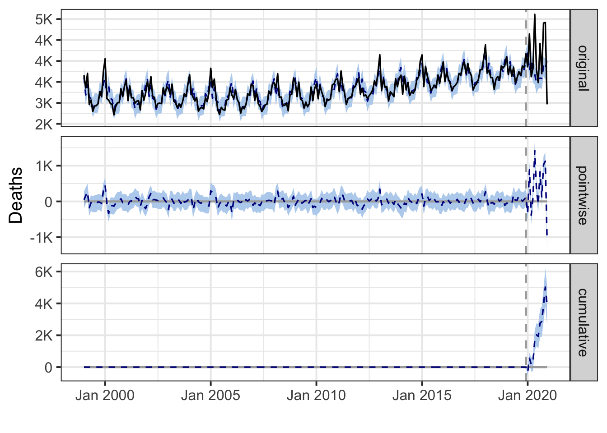
Mississippi

During the post-intervention period, the response variable had an average value of approx. 3.06K. By contrast, in the absence of an intervention, we would have expected an average response of 2.71K. The 95% interval of this counterfactual prediction is [2.64K, 2.79K]. Subtracting this prediction from the observed response yields an estimate of the causal effect the intervention had on the response variable. This effect is 0.35K with a 95% interval of [0.28K, 0.42K]. For a discussion of the significance of this effect, see below.
Summing up the individual data points during the post-intervention period (which can only sometimes be meaningfully interpreted), the response variable had an overall value of 36.77K. By contrast, had the intervention not taken place, we would have expected a sum of 32.54K. The 95% interval of this prediction is [31.68K, 33.43K].
The above results are given in terms of absolute numbers. In relative terms, the response variable showed an increase of +13%. The 95% interval of this percentage is [+10%, +16%].
This means that the positive effect observed during the intervention period is statistically significant and unlikely to be due to random fluctuations. It should be noted, however, that the question of whether this increase also bears substantive significance can only be answered by comparing the absolute effect (0.35K) to the original goal of the underlying intervention.
The probability of obtaining this effect by chance is very small (Bayesian one-sided tail-area probability p = 0.001). This means the causal effect can be considered statistically significant.

Missouri
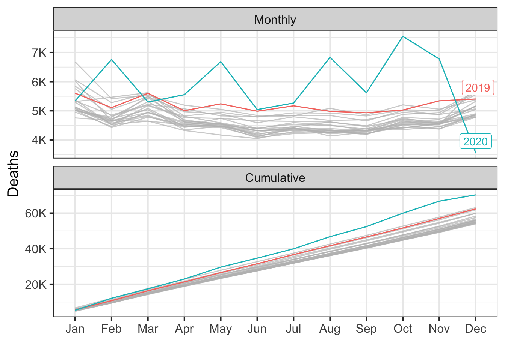
During the post-intervention period, the response variable had an average value of approx. 5.86K. By contrast, in the absence of an intervention, we would have expected an average response of 5.17K. The 95% interval of this counterfactual prediction is [5.03K, 5.33K]. Subtracting this prediction from the observed response yields an estimate of the causal effect the intervention had on the response variable. This effect is 0.69K with a 95% interval of [0.53K, 0.83K]. For a discussion of the significance of this effect, see below.
Summing up the individual data points during the post-intervention period (which can only sometimes be meaningfully interpreted), the response variable had an overall value of 70.30K. By contrast, had the intervention not taken place, we would have expected a sum of 62.04K. The 95% interval of this prediction is [60.35K, 63.95K].
The above results are given in terms of absolute numbers. In relative terms, the response variable showed an increase of +13%. The 95% interval of this percentage is [+10%, +16%].
This means that the positive effect observed during the intervention period is statistically significant and unlikely to be due to random fluctuations. It should be noted, however, that the question of whether this increase also bears substantive significance can only be answered by comparing the absolute effect (0.69K) to the original goal of the underlying intervention.
The probability of obtaining this effect by chance is very small (Bayesian one-sided tail-area probability p = 0.001). This means the causal effect can be considered statistically significant.

Montana
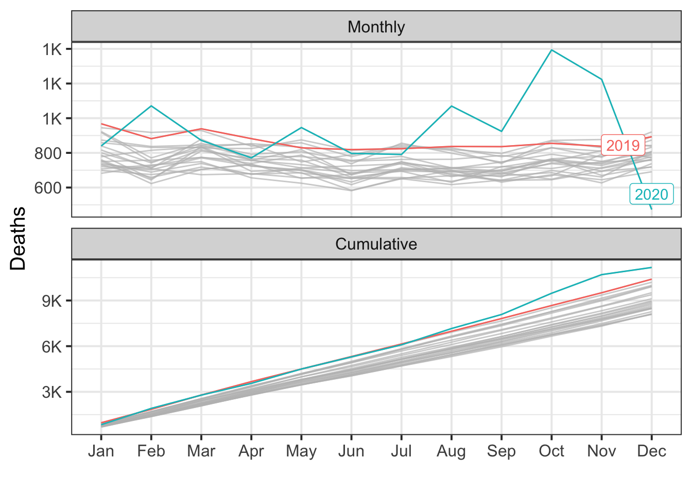
During the post-intervention period, the response variable had an average value of approx. 931.08. By contrast, in the absence of an intervention, we would have expected an average response of 848.25. The 95% interval of this counterfactual prediction is [819.42, 877.22]. Subtracting this prediction from the observed response yields an estimate of the causal effect the intervention had on the response variable. This effect is 82.83 with a 95% interval of [53.87, 111.66]. For a discussion of the significance of this effect, see below.
Summing up the individual data points during the post-intervention period (which can only sometimes be meaningfully interpreted), the response variable had an overall value of 11.17K. By contrast, had the intervention not taken place, we would have expected a sum of 10.18K. The 95% interval of this prediction is [9.83K, 10.53K].
The above results are given in terms of absolute numbers. In relative terms, the response variable showed an increase of +10%. The 95% interval of this percentage is [+6%, +13%].
This means that the positive effect observed during the intervention period is statistically significant and unlikely to be due to random fluctuations. It should be noted, however, that the question of whether this increase also bears substantive significance can only be answered by comparing the absolute effect (82.83) to the original goal of the underlying intervention.
The probability of obtaining this effect by chance is very small (Bayesian one-sided tail-area probability p = 0.001). This means the causal effect can be considered statistically significant.
Nebraska
During the post-intervention period, the response variable had an average value of approx. 1.54K. By contrast, in the absence of an intervention, we would have expected an average response of 1.40K. The 95% interval of this counterfactual prediction is [1.35K, 1.44K]. Subtracting this prediction from the observed response yields an estimate of the causal effect the intervention had on the response variable. This effect is 0.14K with a 95% interval of [0.10K, 0.19K]. For a discussion of the significance of this effect, see below.
Summing up the individual data points during the post-intervention period (which can only sometimes be meaningfully interpreted), the response variable had an overall value of 18.49K. By contrast, had the intervention not taken place, we would have expected a sum of 16.76K. The 95% interval of this prediction is [16.26K, 17.29K].
The above results are given in terms of absolute numbers. In relative terms, the response variable showed an increase of +10%. The 95% interval of this percentage is [+7%, +13%].
This means that the positive effect observed during the intervention period is statistically significant and unlikely to be due to random fluctuations. It should be noted, however, that the question of whether this increase also bears substantive significance can only be answered by comparing the absolute effect (0.14K) to the original goal of the underlying intervention.
The probability of obtaining this effect by chance is very small (Bayesian one-sided tail-area probability p = 0.001). This means the causal effect can be considered statistically significant.
Nevada

During the post-intervention period, the response variable had an average value of approx. 2.41K. By contrast, in the absence of an intervention, we would have expected an average response of 2.12K. The 95% interval of this counterfactual prediction is [2.05K, 2.19K]. Subtracting this prediction from the observed response yields an estimate of the causal effect the intervention had on the response variable. This effect is 0.29K with a 95% interval of [0.22K, 0.36K]. For a discussion of the significance of this effect, see below.
Summing up the individual data points during the post-intervention period (which can only sometimes be meaningfully interpreted), the response variable had an overall value of 28.90K. By contrast, had the intervention not taken place, we would have expected a sum of 25.44K. The 95% interval of this prediction is [24.58K, 26.31K].
The above results are given in terms of absolute numbers. In relative terms, the response variable showed an increase of +14%. The 95% interval of this percentage is [+10%, +17%].
This means that the positive effect observed during the intervention period is statistically significant and unlikely to be due to random fluctuations. It should be noted, however, that the question of whether this increase also bears substantive significance can only be answered by comparing the absolute effect (0.29K) to the original goal of the underlying intervention.
The probability of obtaining this effect by chance is very small (Bayesian one-sided tail-area probability p = 0.001). This means the causal effect can be considered statistically significant.

New Hampshire
During the post-intervention period, the response variable had an average value of approx. 1.08K. In the absence of an intervention, we would have expected an average response of 1.06K. The 95% interval of this counterfactual prediction is [1.03K, 1.10K]. Subtracting this prediction from the observed response yields an estimate of the causal effect the intervention had on the response variable. This effect is 0.01K with a 95% interval of [-0.02K, 0.05K]. For a discussion of the significance of this effect, see below.
Summing up the individual data points during the post-intervention period (which can only sometimes be meaningfully interpreted), the response variable had an overall value of 12.94K. Had the intervention not taken place, we would have expected a sum of 12.76K. The 95% interval of this prediction is [12.32K, 13.22K].
The above results are given in terms of absolute numbers. In relative terms, the response variable showed an increase of +1%. The 95% interval of this percentage is [-2%, +5%].
This means that, although the intervention appears to have caused a positive effect, this effect is not statistically significant when considering the entire post-intervention period as a whole. Individual days or shorter stretches within the intervention period may of course still have had a significant effect, as indicated whenever the lower limit of the impact time series (lower plot) was above zero. The apparent effect could be the result of random fluctuations that are unrelated to the intervention. This is often the case when the intervention period is very long and includes much of the time when the effect has already worn off. It can also be the case when the intervention period is too short to distinguish the signal from the noise. Finally, failing to find a significant effect can happen when there are not enough control variables or when these variables do not correlate well with the response variable during the learning period.
The probability of obtaining this effect by chance is p = 0.205. This means the effect may be spurious and would generally not be considered statistically significant.

New Jersey

During the post-intervention period, the response variable had an average value of approx. 7.60K. By contrast, in the absence of an intervention, we would have expected an average response of 6.24K. The 95% interval of this counterfactual prediction is [6.09K, 6.40K]. Subtracting this prediction from the observed response yields an estimate of the causal effect the intervention had on the response variable. This effect is 1.36K with a 95% interval of [1.20K, 1.51K]. For a discussion of the significance of this effect, see below.
Summing up the individual data points during the post-intervention period (which can only sometimes be meaningfully interpreted), the response variable had an overall value of 91.17K. By contrast, had the intervention not taken place, we would have expected a sum of 74.83K. The 95% interval of this prediction is [73.04K, 76.78K].
The above results are given in terms of absolute numbers. In relative terms, the response variable showed an increase of +22%. The 95% interval of this percentage is [+19%, +24%].
This means that the positive effect observed during the intervention period is statistically significant and unlikely to be due to random fluctuations. It should be noted, however, that the question of whether this increase also bears substantive significance can only be answered by comparing the absolute effect (1.36K) to the original goal of the underlying intervention.
The probability of obtaining this effect by chance is very small (Bayesian one-sided tail-area probability p = 0.001). This means the causal effect can be considered statistically significant.

New Mexico

During the post-intervention period, the response variable had an average value of approx. 1.69K. By contrast, in the absence of an intervention, we would have expected an average response of 1.61K. The 95% interval of this counterfactual prediction is [1.56K, 1.67K]. Subtracting this prediction from the observed response yields an estimate of the causal effect the intervention had on the response variable. This effect is 0.07K with a 95% interval of [0.02K, 0.12K]. For a discussion of the significance of this effect, see below.
Summing up the individual data points during the post-intervention period (which can only sometimes be meaningfully interpreted), the response variable had an overall value of 20.22K. By contrast, had the intervention not taken place, we would have expected a sum of 19.36K. The 95% interval of this prediction is [18.76K, 19.98K].
The above results are given in terms of absolute numbers. In relative terms, the response variable showed an increase of +4%. The 95% interval of this percentage is [+1%, +8%].
This means that the positive effect observed during the intervention period is statistically significant and unlikely to be due to random fluctuations. It should be noted, however, that the question of whether this increase also bears substantive significance can only be answered by comparing the absolute effect (0.07K) to the original goal of the underlying intervention.
The probability of obtaining this effect by chance is very small (Bayesian one-sided tail-area probability p = 0.005). This means the causal effect can be considered statistically significant.

New York

During the post-intervention period, the response variable had an average value of approx. 16.12K. By contrast, in the absence of an intervention, we would have expected an average response of 13.00K. The 95% interval of this counterfactual prediction is [12.68K, 13.32K]. Subtracting this prediction from the observed response yields an estimate of the causal effect the intervention had on the response variable. This effect is 3.13K with a 95% interval of [2.81K, 3.44K]. For a discussion of the significance of this effect, see below.
Summing up the individual data points during the post-intervention period (which can only sometimes be meaningfully interpreted), the response variable had an overall value of 193.47K. By contrast, had the intervention not taken place, we would have expected a sum of 155.96K. The 95% interval of this prediction is [152.18K, 159.80K].
The above results are given in terms of absolute numbers. In relative terms, the response variable showed an increase of +24%. The 95% interval of this percentage is [+22%, +26%].
This means that the positive effect observed during the intervention period is statistically significant and unlikely to be due to random fluctuations. It should be noted, however, that the question of whether this increase also bears substantive significance can only be answered by comparing the absolute effect (3.13K) to the original goal of the underlying intervention.
The probability of obtaining this effect by chance is very small (Bayesian one-sided tail-area probability p = 0.001). This means the causal effect can be considered statistically significant.

North Carolina
## Warning: Removed 3 row(s) containing missing values (geom_path).
## Warning: Removed 3 row(s) containing missing values (geom_path).## Interpolated missing data.During the post-intervention period, the response variable had an average value of approx. 6.40K. By contrast, in the absence of an intervention, we would have expected an average response of 7.96K. The 95% interval of this counterfactual prediction is [7.75K, 8.19K]. Subtracting this prediction from the observed response yields an estimate of the causal effect the intervention had on the response variable. This effect is -1.56K with a 95% interval of [-1.79K, -1.35K]. For a discussion of the significance of this effect, see below.
Summing up the individual data points during the post-intervention period (which can only sometimes be meaningfully interpreted), the response variable had an overall value of 76.75K. By contrast, had the intervention not taken place, we would have expected a sum of 95.52K. The 95% interval of this prediction is [92.97K, 98.27K].
The above results are given in terms of absolute numbers. In relative terms, the response variable showed a decrease of -20%. The 95% interval of this percentage is [-23%, -17%].
This means that the negative effect observed during the intervention period is statistically significant. If the experimenter had expected a positive effect, it is recommended to double-check whether anomalies in the control variables may have caused an overly optimistic expectation of what should have happened in the response variable in the absence of the intervention.
The probability of obtaining this effect by chance is very small (Bayesian one-sided tail-area probability p = 0.001). This means the causal effect can be considered statistically significant.

North Dakota
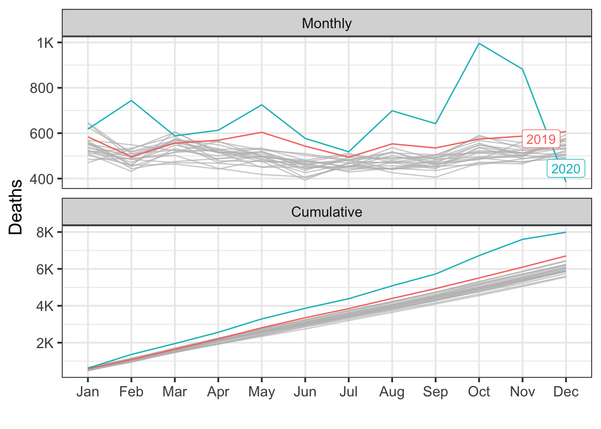
During the post-intervention period, the response variable had an average value of approx. 665.58. By contrast, in the absence of an intervention, we would have expected an average response of 533.37. The 95% interval of this counterfactual prediction is [513.42, 555.76]. Subtracting this prediction from the observed response yields an estimate of the causal effect the intervention had on the response variable. This effect is 132.21 with a 95% interval of [109.83, 152.17]. For a discussion of the significance of this effect, see below.
Summing up the individual data points during the post-intervention period (which can only sometimes be meaningfully interpreted), the response variable had an overall value of 7.99K. By contrast, had the intervention not taken place, we would have expected a sum of 6.40K. The 95% interval of this prediction is [6.16K, 6.67K].
The above results are given in terms of absolute numbers. In relative terms, the response variable showed an increase of +25%. The 95% interval of this percentage is [+21%, +29%].
This means that the positive effect observed during the intervention period is statistically significant and unlikely to be due to random fluctuations. It should be noted, however, that the question of whether this increase also bears substantive significance can only be answered by comparing the absolute effect (132.21) to the original goal of the underlying intervention.
The probability of obtaining this effect by chance is very small (Bayesian one-sided tail-area probability p = 0.001). This means the causal effect can be considered statistically significant.
Ohio
During the post-intervention period, the response variable had an average value of approx. 10.82K. By contrast, in the absence of an intervention, we would have expected an average response of 10.29K. The 95% interval of this counterfactual prediction is [10.03K, 10.57K]. Subtracting this prediction from the observed response yields an estimate of the causal effect the intervention had on the response variable. This effect is 0.53K with a 95% interval of [0.25K, 0.79K]. For a discussion of the significance of this effect, see below.
Summing up the individual data points during the post-intervention period (which can only sometimes be meaningfully interpreted), the response variable had an overall value of 129.83K. By contrast, had the intervention not taken place, we would have expected a sum of 123.46K. The 95% interval of this prediction is [120.40K, 126.86K].
The above results are given in terms of absolute numbers. In relative terms, the response variable showed an increase of +5%. The 95% interval of this percentage is [+2%, +8%].
This means that the positive effect observed during the intervention period is statistically significant and unlikely to be due to random fluctuations. It should be noted, however, that the question of whether this increase also bears substantive significance can only be answered by comparing the absolute effect (0.53K) to the original goal of the underlying intervention.
The probability of obtaining this effect by chance is very small (Bayesian one-sided tail-area probability p = 0.001). This means the causal effect can be considered statistically significant.

Oklahoma
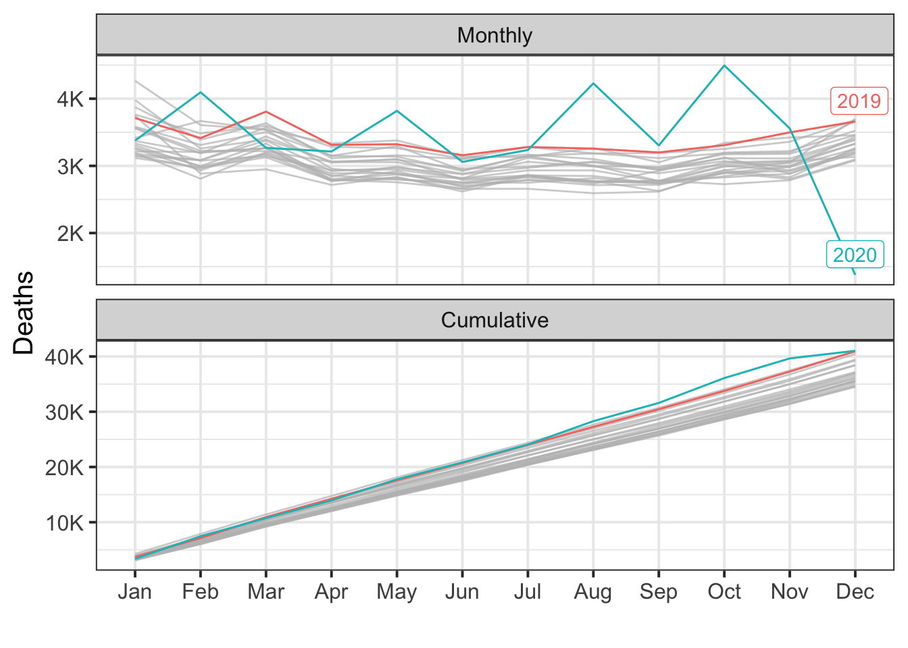
During the post-intervention period, the response variable had an average value of approx. 3.42K. In the absence of an intervention, we would have expected an average response of 3.38K. The 95% interval of this counterfactual prediction is [3.29K, 3.47K]. Subtracting this prediction from the observed response yields an estimate of the causal effect the intervention had on the response variable. This effect is 0.04K with a 95% interval of [-0.05K, 0.13K]. For a discussion of the significance of this effect, see below.
Summing up the individual data points during the post-intervention period (which can only sometimes be meaningfully interpreted), the response variable had an overall value of 41.03K. Had the intervention not taken place, we would have expected a sum of 40.59K. The 95% interval of this prediction is [39.52K, 41.64K].
The above results are given in terms of absolute numbers. In relative terms, the response variable showed an increase of +1%. The 95% interval of this percentage is [-1%, +4%].
This means that, although the intervention appears to have caused a positive effect, this effect is not statistically significant when considering the entire post-intervention period as a whole. Individual days or shorter stretches within the intervention period may of course still have had a significant effect, as indicated whenever the lower limit of the impact time series (lower plot) was above zero. The apparent effect could be the result of random fluctuations that are unrelated to the intervention. This is often the case when the intervention period is very long and includes much of the time when the effect has already worn off. It can also be the case when the intervention period is too short to distinguish the signal from the noise. Finally, failing to find a significant effect can happen when there are not enough control variables or when these variables do not correlate well with the response variable during the learning period.
The probability of obtaining this effect by chance is p = 0.2. This means the effect may be spurious and would generally not be considered statistically significant.

Oregon
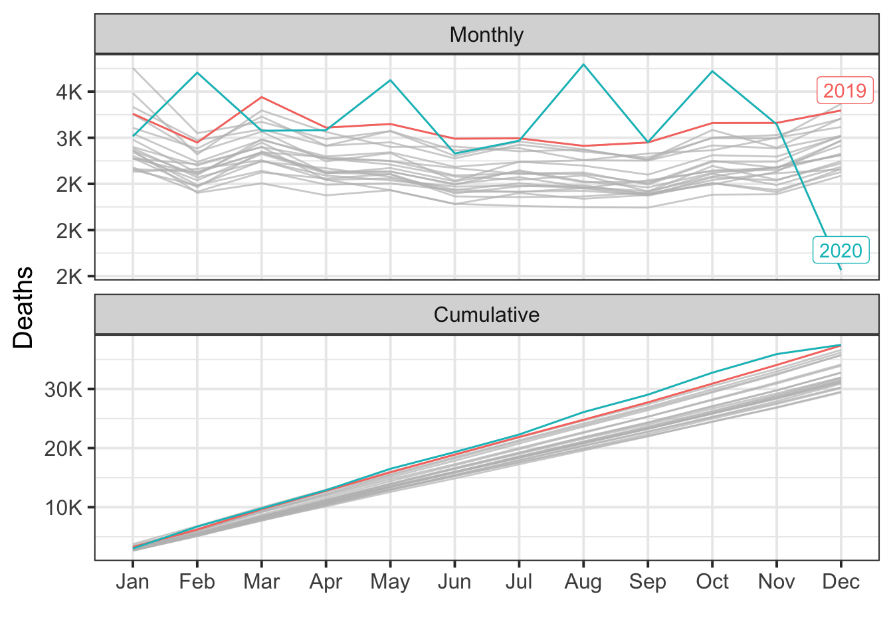
During the post-intervention period, the response variable had an average value of approx. 3.12K. In the absence of an intervention, we would have expected an average response of 3.09K. The 95% interval of this counterfactual prediction is [3.02K, 3.17K]. Subtracting this prediction from the observed response yields an estimate of the causal effect the intervention had on the response variable. This effect is 0.03K with a 95% interval of [-0.05K, 0.11K]. For a discussion of the significance of this effect, see below.
Summing up the individual data points during the post-intervention period (which can only sometimes be meaningfully interpreted), the response variable had an overall value of 37.48K. Had the intervention not taken place, we would have expected a sum of 37.08K. The 95% interval of this prediction is [36.22K, 38.05K].
The above results are given in terms of absolute numbers. In relative terms, the response variable showed an increase of +1%. The 95% interval of this percentage is [-2%, +3%].
This means that, although the intervention appears to have caused a positive effect, this effect is not statistically significant when considering the entire post-intervention period as a whole. Individual days or shorter stretches within the intervention period may of course still have had a significant effect, as indicated whenever the lower limit of the impact time series (lower plot) was above zero. The apparent effect could be the result of random fluctuations that are unrelated to the intervention. This is often the case when the intervention period is very long and includes much of the time when the effect has already worn off. It can also be the case when the intervention period is too short to distinguish the signal from the noise. Finally, failing to find a significant effect can happen when there are not enough control variables or when these variables do not correlate well with the response variable during the learning period.
The probability of obtaining this effect by chance is p = 0.193. This means the effect may be spurious and would generally not be considered statistically significant.

Pennsylvania

During the post-intervention period, the response variable had an average value of approx. 12.17K. By contrast, in the absence of an intervention, we would have expected an average response of 11.15K. The 95% interval of this counterfactual prediction is [10.90K, 11.41K]. Subtracting this prediction from the observed response yields an estimate of the causal effect the intervention had on the response variable. This effect is 1.02K with a 95% interval of [0.77K, 1.28K]. For a discussion of the significance of this effect, see below.
Summing up the individual data points during the post-intervention period (which can only sometimes be meaningfully interpreted), the response variable had an overall value of 146.08K. By contrast, had the intervention not taken place, we would have expected a sum of 133.85K. The 95% interval of this prediction is [130.77K, 136.88K].
The above results are given in terms of absolute numbers. In relative terms, the response variable showed an increase of +9%. The 95% interval of this percentage is [+7%, +11%].
This means that the positive effect observed during the intervention period is statistically significant and unlikely to be due to random fluctuations. It should be noted, however, that the question of whether this increase also bears substantive significance can only be answered by comparing the absolute effect (1.02K) to the original goal of the underlying intervention.
The probability of obtaining this effect by chance is very small (Bayesian one-sided tail-area probability p = 0.001). This means the causal effect can be considered statistically significant.
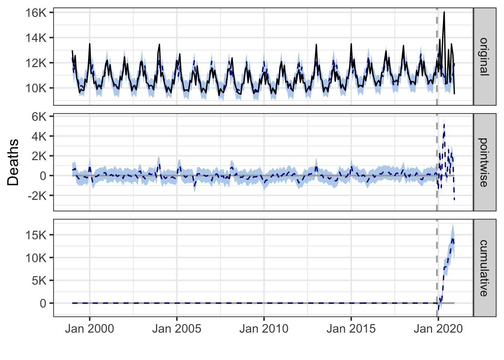
Rhode Island

During the post-intervention period, the response variable had an average value of approx. 914.25. By contrast, in the absence of an intervention, we would have expected an average response of 830.96. The 95% interval of this counterfactual prediction is [800.13, 862.38]. Subtracting this prediction from the observed response yields an estimate of the causal effect the intervention had on the response variable. This effect is 83.29 with a 95% interval of [51.87, 114.12]. For a discussion of the significance of this effect, see below.
Summing up the individual data points during the post-intervention period (which can only sometimes be meaningfully interpreted), the response variable had an overall value of 10.97K. By contrast, had the intervention not taken place, we would have expected a sum of 9.97K. The 95% interval of this prediction is [9.60K, 10.35K].
The above results are given in terms of absolute numbers. In relative terms, the response variable showed an increase of +10%. The 95% interval of this percentage is [+6%, +14%].
This means that the positive effect observed during the intervention period is statistically significant and unlikely to be due to random fluctuations. It should be noted, however, that the question of whether this increase also bears substantive significance can only be answered by comparing the absolute effect (83.29) to the original goal of the underlying intervention.
The probability of obtaining this effect by chance is very small (Bayesian one-sided tail-area probability p = 0.001). This means the causal effect can be considered statistically significant.
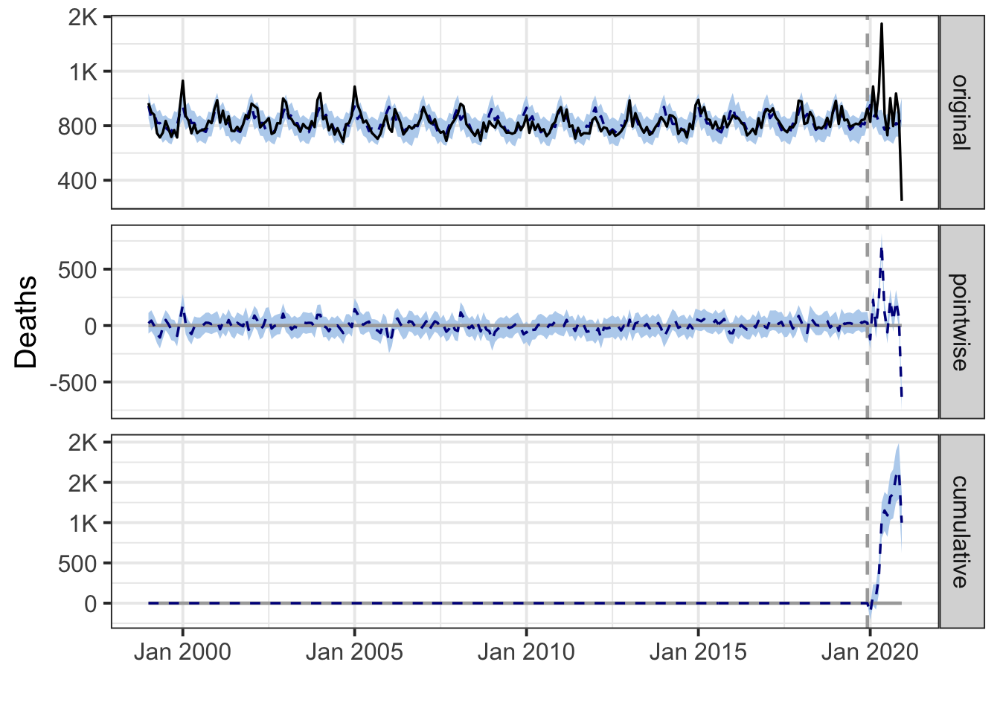
South Carolina

During the post-intervention period, the response variable had an average value of approx. 4.67K. By contrast, in the absence of an intervention, we would have expected an average response of 4.26K. The 95% interval of this counterfactual prediction is [4.14K, 4.38K]. Subtracting this prediction from the observed response yields an estimate of the causal effect the intervention had on the response variable. This effect is 0.42K with a 95% interval of [0.29K, 0.53K]. For a discussion of the significance of this effect, see below.
Summing up the individual data points during the post-intervention period (which can only sometimes be meaningfully interpreted), the response variable had an overall value of 56.08K. By contrast, had the intervention not taken place, we would have expected a sum of 51.09K. The 95% interval of this prediction is [49.66K, 52.58K].
The above results are given in terms of absolute numbers. In relative terms, the response variable showed an increase of +10%. The 95% interval of this percentage is [+7%, +13%].
This means that the positive effect observed during the intervention period is statistically significant and unlikely to be due to random fluctuations. It should be noted, however, that the question of whether this increase also bears substantive significance can only be answered by comparing the absolute effect (0.42K) to the original goal of the underlying intervention.
The probability of obtaining this effect by chance is very small (Bayesian one-sided tail-area probability p = 0.001). This means the causal effect can be considered statistically significant.

South Dakota
During the post-intervention period, the response variable had an average value of approx. 772.25. By contrast, in the absence of an intervention, we would have expected an average response of 668.55. The 95% interval of this counterfactual prediction is [646.93, 692.36]. Subtracting this prediction from the observed response yields an estimate of the causal effect the intervention had on the response variable. This effect is 103.70 with a 95% interval of [79.89, 125.32]. For a discussion of the significance of this effect, see below.
Summing up the individual data points during the post-intervention period (which can only sometimes be meaningfully interpreted), the response variable had an overall value of 9.27K. By contrast, had the intervention not taken place, we would have expected a sum of 8.02K. The 95% interval of this prediction is [7.76K, 8.31K].
The above results are given in terms of absolute numbers. In relative terms, the response variable showed an increase of +16%. The 95% interval of this percentage is [+12%, +19%].
This means that the positive effect observed during the intervention period is statistically significant and unlikely to be due to random fluctuations. It should be noted, however, that the question of whether this increase also bears substantive significance can only be answered by comparing the absolute effect (103.70) to the original goal of the underlying intervention.
The probability of obtaining this effect by chance is very small (Bayesian one-sided tail-area probability p = 0.001). This means the causal effect can be considered statistically significant.
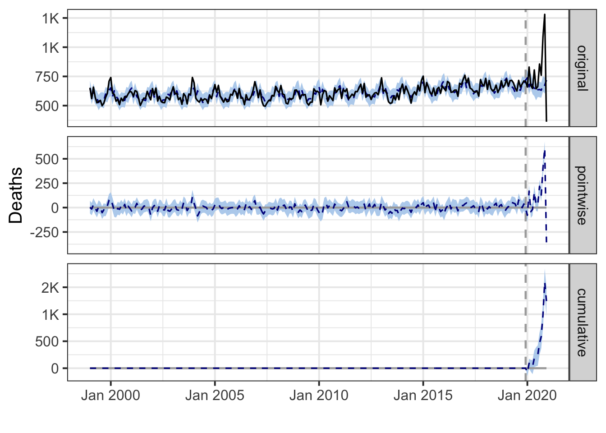
Tennessee
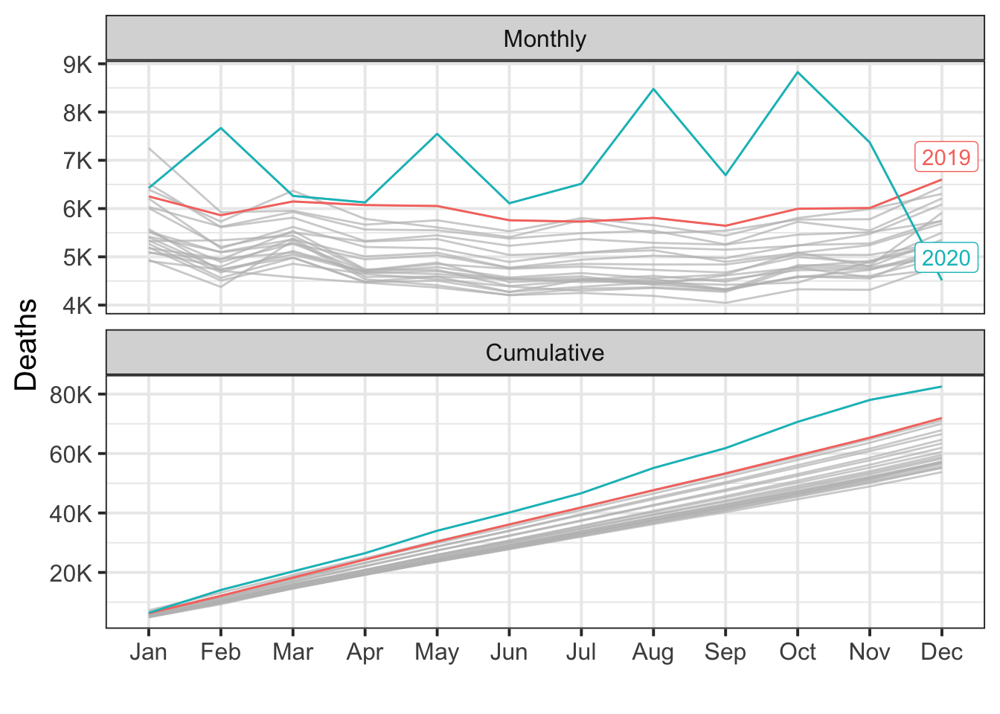
During the post-intervention period, the response variable had an average value of approx. 6.88K. By contrast, in the absence of an intervention, we would have expected an average response of 5.99K. The 95% interval of this counterfactual prediction is [5.83K, 6.16K]. Subtracting this prediction from the observed response yields an estimate of the causal effect the intervention had on the response variable. This effect is 0.88K with a 95% interval of [0.72K, 1.05K]. For a discussion of the significance of this effect, see below.
Summing up the individual data points during the post-intervention period (which can only sometimes be meaningfully interpreted), the response variable had an overall value of 82.54K. By contrast, had the intervention not taken place, we would have expected a sum of 71.93K. The 95% interval of this prediction is [69.96K, 73.88K].
The above results are given in terms of absolute numbers. In relative terms, the response variable showed an increase of +15%. The 95% interval of this percentage is [+12%, +17%].
This means that the positive effect observed during the intervention period is statistically significant and unlikely to be due to random fluctuations. It should be noted, however, that the question of whether this increase also bears substantive significance can only be answered by comparing the absolute effect (0.88K) to the original goal of the underlying intervention.
The probability of obtaining this effect by chance is very small (Bayesian one-sided tail-area probability p = 0.001). This means the causal effect can be considered statistically significant.

Texas
During the post-intervention period, the response variable had an average value of approx. 19.56K. By contrast, in the absence of an intervention, we would have expected an average response of 17.05K. The 95% interval of this counterfactual prediction is [16.63K, 17.57K]. Subtracting this prediction from the observed response yields an estimate of the causal effect the intervention had on the response variable. This effect is 2.52K with a 95% interval of [2.00K, 2.94K]. For a discussion of the significance of this effect, see below.
Summing up the individual data points during the post-intervention period (which can only sometimes be meaningfully interpreted), the response variable had an overall value of 234.77K. By contrast, had the intervention not taken place, we would have expected a sum of 204.59K. The 95% interval of this prediction is [199.51K, 210.79K].
The above results are given in terms of absolute numbers. In relative terms, the response variable showed an increase of +15%. The 95% interval of this percentage is [+12%, +17%].
This means that the positive effect observed during the intervention period is statistically significant and unlikely to be due to random fluctuations. It should be noted, however, that the question of whether this increase also bears substantive significance can only be answered by comparing the absolute effect (2.52K) to the original goal of the underlying intervention.
The probability of obtaining this effect by chance is very small (Bayesian one-sided tail-area probability p = 0.001). This means the causal effect can be considered statistically significant.

Utah

During the post-intervention period, the response variable had an average value of approx. 1.75K. By contrast, in the absence of an intervention, we would have expected an average response of 1.56K. The 95% interval of this counterfactual prediction is [1.51K, 1.61K]. Subtracting this prediction from the observed response yields an estimate of the causal effect the intervention had on the response variable. This effect is 0.19K with a 95% interval of [0.15K, 0.24K]. For a discussion of the significance of this effect, see below.
Summing up the individual data points during the post-intervention period (which can only sometimes be meaningfully interpreted), the response variable had an overall value of 21.02K. By contrast, had the intervention not taken place, we would have expected a sum of 18.70K. The 95% interval of this prediction is [18.14K, 19.28K].
The above results are given in terms of absolute numbers. In relative terms, the response variable showed an increase of +12%. The 95% interval of this percentage is [+9%, +15%].
This means that the positive effect observed during the intervention period is statistically significant and unlikely to be due to random fluctuations. It should be noted, however, that the question of whether this increase also bears substantive significance can only be answered by comparing the absolute effect (0.19K) to the original goal of the underlying intervention.
The probability of obtaining this effect by chance is very small (Bayesian one-sided tail-area probability p = 0.001). This means the causal effect can be considered statistically significant.

Vermont
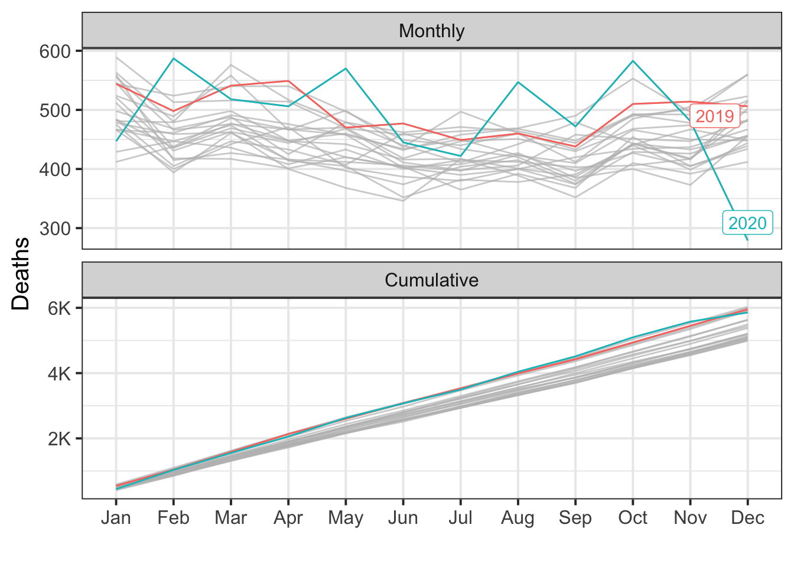
During the post-intervention period, the response variable had an average value of approx. 488.08. In the absence of an intervention, we would have expected an average response of 495.41. The 95% interval of this counterfactual prediction is [477.22, 513.43]. Subtracting this prediction from the observed response yields an estimate of the causal effect the intervention had on the response variable. This effect is -7.32 with a 95% interval of [-25.35, 10.86]. For a discussion of the significance of this effect, see below.
Summing up the individual data points during the post-intervention period (which can only sometimes be meaningfully interpreted), the response variable had an overall value of 5.86K. Had the intervention not taken place, we would have expected a sum of 5.94K. The 95% interval of this prediction is [5.73K, 6.16K].
The above results are given in terms of absolute numbers. In relative terms, the response variable showed a decrease of -1%. The 95% interval of this percentage is [-5%, +2%].
This means that, although it may look as though the intervention has exerted a negative effect on the response variable when considering the intervention period as a whole, this effect is not statistically significant, and so cannot be meaningfully interpreted. The apparent effect could be the result of random fluctuations that are unrelated to the intervention. This is often the case when the intervention period is very long and includes much of the time when the effect has already worn off. It can also be the case when the intervention period is too short to distinguish the signal from the noise. Finally, failing to find a significant effect can happen when there are not enough control variables or when these variables do not correlate well with the response variable during the learning period.
The probability of obtaining this effect by chance is p = 0.21. This means the effect may be spurious and would generally not be considered statistically significant.

Virginia

During the post-intervention period, the response variable had an average value of approx. 6.24K. By contrast, in the absence of an intervention, we would have expected an average response of 5.83K. The 95% interval of this counterfactual prediction is [5.70K, 5.98K]. Subtracting this prediction from the observed response yields an estimate of the causal effect the intervention had on the response variable. This effect is 0.40K with a 95% interval of [0.26K, 0.54K]. For a discussion of the significance of this effect, see below.
Summing up the individual data points during the post-intervention period (which can only sometimes be meaningfully interpreted), the response variable had an overall value of 74.87K. By contrast, had the intervention not taken place, we would have expected a sum of 70.01K. The 95% interval of this prediction is [68.34K, 71.73K].
The above results are given in terms of absolute numbers. In relative terms, the response variable showed an increase of +7%. The 95% interval of this percentage is [+4%, +9%].
This means that the positive effect observed during the intervention period is statistically significant and unlikely to be due to random fluctuations. It should be noted, however, that the question of whether this increase also bears substantive significance can only be answered by comparing the absolute effect (0.40K) to the original goal of the underlying intervention.
The probability of obtaining this effect by chance is very small (Bayesian one-sided tail-area probability p = 0.001). This means the causal effect can be considered statistically significant.

Washington

During the post-intervention period, the response variable had an average value of approx. 5.00K. By contrast, in the absence of an intervention, we would have expected an average response of 4.82K. The 95% interval of this counterfactual prediction is [4.70K, 4.96K]. Subtracting this prediction from the observed response yields an estimate of the causal effect the intervention had on the response variable. This effect is 0.18K with a 95% interval of [0.05K, 0.30K]. For a discussion of the significance of this effect, see below.
Summing up the individual data points during the post-intervention period (which can only sometimes be meaningfully interpreted), the response variable had an overall value of 60.05K. By contrast, had the intervention not taken place, we would have expected a sum of 57.83K. The 95% interval of this prediction is [56.41K, 59.48K].
The above results are given in terms of absolute numbers. In relative terms, the response variable showed an increase of +4%. The 95% interval of this percentage is [+1%, +6%].
This means that the positive effect observed during the intervention period is statistically significant and unlikely to be due to random fluctuations. It should be noted, however, that the question of whether this increase also bears substantive significance can only be answered by comparing the absolute effect (0.18K) to the original goal of the underlying intervention.
The probability of obtaining this effect by chance is very small (Bayesian one-sided tail-area probability p = 0.006). This means the causal effect can be considered statistically significant.

West Virginia

During the post-intervention period, the response variable had an average value of approx. 1.72K. By contrast, in the absence of an intervention, we would have expected an average response of 1.93K. The 95% interval of this counterfactual prediction is [1.87K, 1.98K]. Subtracting this prediction from the observed response yields an estimate of the causal effect the intervention had on the response variable. This effect is -0.21K with a 95% interval of [-0.26K, -0.15K]. For a discussion of the significance of this effect, see below.
Summing up the individual data points during the post-intervention period (which can only sometimes be meaningfully interpreted), the response variable had an overall value of 20.64K. By contrast, had the intervention not taken place, we would have expected a sum of 23.12K. The 95% interval of this prediction is [22.47K, 23.74K].
The above results are given in terms of absolute numbers. In relative terms, the response variable showed a decrease of -11%. The 95% interval of this percentage is [-13%, -8%].
This means that the negative effect observed during the intervention period is statistically significant. If the experimenter had expected a positive effect, it is recommended to double-check whether anomalies in the control variables may have caused an overly optimistic expectation of what should have happened in the response variable in the absence of the intervention.
The probability of obtaining this effect by chance is very small (Bayesian one-sided tail-area probability p = 0.001). This means the causal effect can be considered statistically significant.

Wisconsin
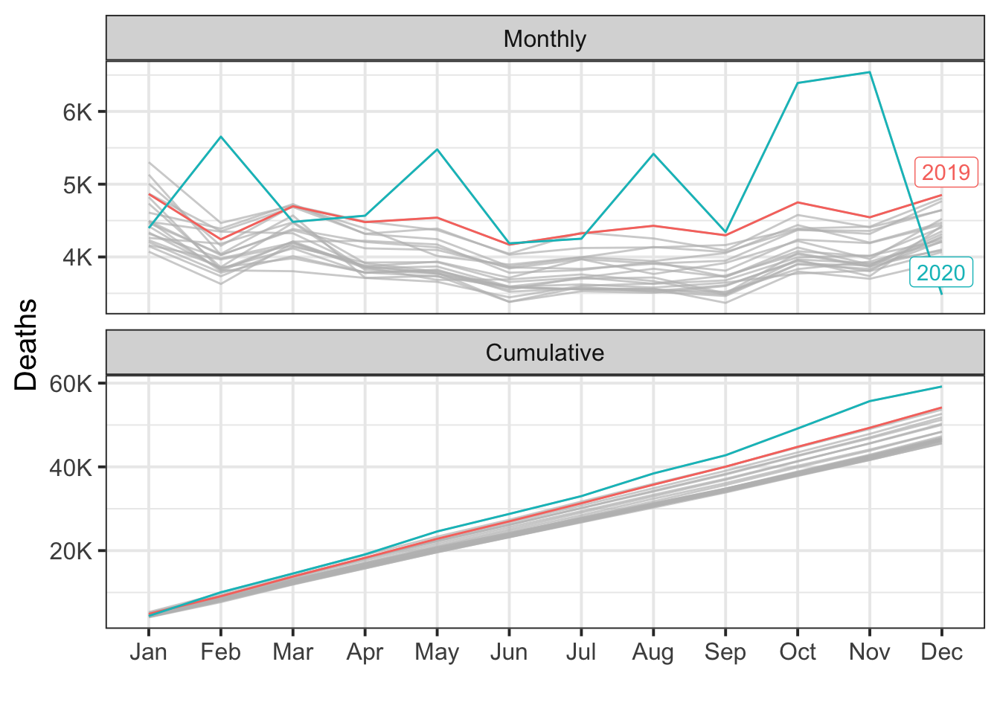
During the post-intervention period, the response variable had an average value of approx. 4.93K. By contrast, in the absence of an intervention, we would have expected an average response of 4.49K. The 95% interval of this counterfactual prediction is [4.38K, 4.60K]. Subtracting this prediction from the observed response yields an estimate of the causal effect the intervention had on the response variable. This effect is 0.44K with a 95% interval of [0.34K, 0.55K]. For a discussion of the significance of this effect, see below.
Summing up the individual data points during the post-intervention period (which can only sometimes be meaningfully interpreted), the response variable had an overall value of 59.19K. By contrast, had the intervention not taken place, we would have expected a sum of 53.85K. The 95% interval of this prediction is [52.53K, 55.14K].
The above results are given in terms of absolute numbers. In relative terms, the response variable showed an increase of +10%. The 95% interval of this percentage is [+8%, +12%].
This means that the positive effect observed during the intervention period is statistically significant and unlikely to be due to random fluctuations. It should be noted, however, that the question of whether this increase also bears substantive significance can only be answered by comparing the absolute effect (0.44K) to the original goal of the underlying intervention.
The probability of obtaining this effect by chance is very small (Bayesian one-sided tail-area probability p = 0.001). This means the causal effect can be considered statistically significant.

Wyoming

During the post-intervention period, the response variable had an average value of approx. 427.00. In the absence of an intervention, we would have expected an average response of 413.47. The 95% interval of this counterfactual prediction is [395.93, 430.12]. Subtracting this prediction from the observed response yields an estimate of the causal effect the intervention had on the response variable. This effect is 13.53 with a 95% interval of [-3.12, 31.07]. For a discussion of the significance of this effect, see below.
Summing up the individual data points during the post-intervention period (which can only sometimes be meaningfully interpreted), the response variable had an overall value of 5.12K. Had the intervention not taken place, we would have expected a sum of 4.96K. The 95% interval of this prediction is [4.75K, 5.16K].
The above results are given in terms of absolute numbers. In relative terms, the response variable showed an increase of +3%. The 95% interval of this percentage is [-1%, +8%].
This means that, although the intervention appears to have caused a positive effect, this effect is not statistically significant when considering the entire post-intervention period as a whole. Individual days or shorter stretches within the intervention period may of course still have had a significant effect, as indicated whenever the lower limit of the impact time series (lower plot) was above zero. The apparent effect could be the result of random fluctuations that are unrelated to the intervention. This is often the case when the intervention period is very long and includes much of the time when the effect has already worn off. It can also be the case when the intervention period is too short to distinguish the signal from the noise. Finally, failing to find a significant effect can happen when there are not enough control variables or when these variables do not correlate well with the response variable during the learning period.
The probability of obtaining this effect by chance is p = 0.072. This means the effect may be spurious and would generally not be considered statistically significant.
Puerto Rico

Excess deaths
plot.excess(us.region)Relative

Absolute